본 포스트는 Zheng Li 외 5인의 논문 Local Causal Structure Learning in the Presence of Latent Variables and Selection Bias (arXiv:2607.19866v1, 2026)를 바탕으로, 잠재변수·선택 편향 아래에서의 국소 인과 발견이라는 문제 설정을 처음 접하는 독자도 논리적 흐름을 따라갈 수 있도록 재구성한 것입니다. 같은 연구 계보에 놓인 Local Covariate Selection for Average Causal Effect Estimation 리뷰와 함께 읽으시면 MB(X)를 국소 경계로 삼는다는 공통 설계 철학이 더 선명하게 보입니다.
논문 정보 (Paper Information)
- 제목: Local Causal Structure Learning in the Presence of Latent Variables and Selection Bias
- 저자: Zheng Li, Hao Zhang, Ruxin Wang, Ruichu Cai, Kun Zhang, Feng Xie
- 소속: Shenzhen Institutes of Advanced Technology, CAS / Beijing Technology and Business University / Guangdong University of Technology / Peng Cheng Laboratory / Carnegie Mellon University / MBZUAI
- 교신저자: Hao Zhang, Feng Xie
- 출처: arXiv:2607.19866v1 [cs.LG], 2026년 7월 22일 (Preprint)
- 키워드: 인과 발견(causal discovery), 국소 학습(local learning), 잠재변수(latent variables), 선택 편향(selection bias), 마르코프 블랭킷(Markov blanket)
- 코드:
github.com/zhengli0060/LoCaLS
한 줄 요약 (TL;DR)
“목표 변수 \(T\)의 직접 원인과 직접 결과만 알고 싶다면, \(\mathrm{MB}^{+}(T)\) 밖으로 나갈 필요가 없다.”
잠재변수와 선택 편향을 동시에 허용하면서 국소 인과 구조를 학습하는 문제를 정식화하고, 그 해법으로 LoCaLS를 제안합니다. 먼저 선택 편향까지 반영한 MAG에서의 마르코프 블랭킷 정의를 새로 세우고(Definition 9), \(\mathrm{MB}^{+}(X)\) 위의 주변분포만으로도 \(X\)에 인접한 모든 엣지의 분리 가능성 판정이 끝난다는 국소 경계 정리를 증명합니다(Theorem 1). 이어서 국소적으로 학습된 그래프 \(\mathcal{L}_X\) 안의 정보 중 어떤 것이 전역 PAG와 일치가 보장되는지를 인접성(Corollary 1)·비피복 충돌자 경로(Theorem 2)·비차폐 충돌자 삼중항(Theorem 3)의 세 층위로 정확히 잘라 냅니다. 그 결과 전역 인과 발견이 식별해 낼 목표 특화 정보와 동일한 결과를 내면서도(Theorem 5, 건전성·완전성), CI 검정 횟수와 실행 시간을 수십~수천 배 줄이는 알고리즘을 얻습니다.
초록 (Abstract)
논문이 다루는 문제와 기여를 초록 수준에서 먼저 정리해 보겠습니다.
- 문제 설정: 관측 데이터로부터 목표 변수의 직접 원인과 직접 결과를 발견하는 것은 인과 발견의 근본 문제이며, 유전자 조절 분석·생의학 연구 등에서 폭넓게 쓰입니다.
- 기존 방법의 한계: 기존 인과 발견 방법들은 다음 둘 중 하나입니다.
- 전역 인과 구조를 학습한다 → 계산 비용이 상당합니다.
- 잠재변수와 선택 편향이 없다고 가정한다 → 현실에서는 자주 위배되는 가정입니다.
- 제안: 잠재변수와 선택 편향이 모두 존재하는 상황에서의 국소 인과 구조 학습을 연구합니다.
- 전역 구조를 복원하지 않고도 목표 특화 인과 발견을 가능하게 하는 국소 영역(local region)을 먼저 특성화합니다.
- 그 국소 영역이 유도하는 관측 분포로부터 학습된 인과 정보와 전역 인과 구조 상의 대응 정보 사이의 이론적 다리(theoretical bridge)를 놓습니다.
- 그 위에서 LoCaLS를 제안하고, 표준 가정 하에서 건전(sound)하고 완전(complete)하며 전역 방법이 식별할 수 있는 것과 동일한 직접 원인·직접 결과를 찾아냄을 증명합니다.
- 실험: 랜덤 구조와 실세계 구조 전반에서, 기존 국소 방법보다 구조 정확도가 일관되게 높으면서 최신 전역 방법보다 계산량이 현저히 적음을 보입니다. 나아가 두 개의 실제 유전자 발현 데이터셋에 적용하여 생물학적으로 타당한 목표 특화 인과 구조를 복원합니다.
1. 서론 (Introduction)
1.1 왜 “국소”인가
인과 발견(causal discovery)은 컴퓨터과학(Jonas et al., 2017; Pearl, 2018; Schölkopf, 2022), 사회과학(Spirtes et al., 2000), 역학(Hernán & Robins, 2010), 생물학(Glymour et al., 2019), 신경과학(Smith et al., 2011) 등 여러 분야에서 주목받아 왔습니다. 이렇게 얻은 인과 관계는 외부 개입 하에서 시스템이 어떻게 행동할지를 예측하게 해 주며, 이는 복잡계를 이해하고 조작하는 데 결정적인 단계입니다(Pearl, 2009).
그런데 관측 연구에서 연구자가 실제로 궁금해하는 것은 전역 인과 구조 전체가 아닌 경우가 많습니다.
폐암의 원인은 무엇인가, 흡연의 결과는 무엇인가, 고혈압의 원인과 결과는 무엇인가, 특정 유전자의 조절 원인과 결과는 무엇인가(Geng et al., 2019).
즉 관심사는 하나의 목표 변수 주변입니다. 이 실용적 수요가 국소 인과 발견(local causal discovery) 연구를 낳았습니다.
- PCD-by-PCD (Yin et al., 2008; Zhou et al., 2010): PCD는 parents, children, and some descendants의 약자입니다. MMPC 알고리즘(Tsamardinos et al., 2006)으로 목표의 초기 PCD 집합을 뽑고, 새로 발견된 인접 변수들의 PCD를 순차적으로 계산하며 구조적 경계를 확장합니다. 확장 과정에서 국소 V-구조를 식별하고 Meek 규칙(Meek, 1995)으로 목표에 인접한 엣지의 방향을 점진적으로 결정합니다.
- MB-by-MB (Wang et al., 2014): 위 틀을 마르코프 블랭킷 단위로 바꿔 효율을 높였습니다.
- 그 밖에 CMB(Gao & Ji, 2015), ELCS(Yang et al., 2021), PSL(Ling et al., 2022b), GraN-LCS(Liang et al., 2023) 등이 이어졌습니다.
1.2 그러나 두 개의 제약적 가정
이 방법들의 신뢰성은 대체로 다음 두 가지 제약적 가정에 의존합니다.
- 잠재변수 없음(No latent variables): 관측 변수들 사이에 잠재 교란(latent confounding)이 없다. 즉 두 개 이상의 측정된 변수의 공통 원인 역할을 하는 미관측 변수가 없다.
- 선택 편향 없음(No selection bias): 관측 데이터가 미관측 선택 효과 없이 수집되어, 표본이 관심 모집단을 대표한다.
임상 연구(Richardson, 1998; Zhang, 2008)와 유전자 발현 연구(Wille et al., 2004; Boquest et al., 2005; Frot et al., 2019; Versteeg et al., 2022) 같은 실제 상황에서 이 가정들은 자주 깨집니다.
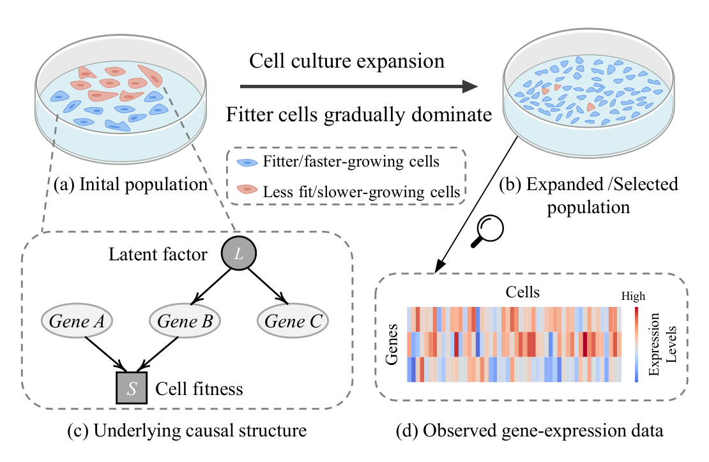
Example 1 (유전자 발현 분석에서의 잠재변수와 선택 편향). 세포 집단을 배양하여 여러 세대에 걸쳐 증식시킨 뒤 발현 프로파일링을 수행하는 유전자 발현 연구를 생각해 봅시다(Boquest et al., 2005; Kemmeren et al., 2014; Versteeg et al., 2022). Fig. 1(a)–(b)가 그 과정입니다.
- 선택 편향의 발생: 배양·증식 과정에서 생존율이 높거나 성장 속도가 빠른 세포가 점차 분석 집단을 지배합니다. 결과적으로 측정된 발현 프로파일은 선택 편향의 영향을 받으며, 관측 표본은 더 이상 원래의 세포 집단을 대표하지 않습니다(Hernán et al., 2004).
- 잠재변수의 발생: 표준 발현 분석은 생물학적으로 관련된 조절자를 전부 포착하지 못합니다. 예를 들어 전사인자나 전사인자 복합체의 단백질 수준 활성은 여러 관측 유전자를 함께 조절하지만 발현 프로파일에는 잡히지 않습니다(Stegle et al., 2012; Buettner et al., 2015).
- 구조적 요약: Fig. 1(c)에서 \(A, B, C\)는 세 유전자, \(S\)는 세포 적합도를 부호화하며 \(A\)와 \(B\)의 발현에 직접 영향을 받는 미관측 선택 변수, \(L\)은 \(B\)와 \(C\)의 공통 원인인 미관측 상류 조절 활성입니다. 선택된 집단으로 조건화하면 충돌자 경로 \(A \to S \leftarrow B\)가 열려 \(A\)–\(B\) 사이에 가짜 연관이 생기고, \(L\)은 \(B\)–\(C\) 사이에 잠재 교란을 만듭니다.
- 귀결: 이 둘을 무시하면 \(A\)가 \(B\)와 \(C\)의 (간접) 원인이라고 잘못 결론지을 수 있습니다(Versteeg et al., 2022).
두 현상은 모두 미관측 변수에서 비롯되지만 작동 방식이 반대입니다.
- 잠재변수 \(L\): 분포에서 주변화(marginalize out)됩니다. \(L\)은 두 관측 변수의 공통 원인이므로, 이를 지우면 관측 변수들 사이에 양방향 엣지 \(\leftrightarrow\) 형태의 흔적이 남습니다.
- 선택 변수 \(S\): 분포에서 조건화(condition on)됩니다. 우리가 보는 데이터 자체가 이미 \(S = s\)인 표본만 모아 놓은 것이기 때문입니다. 충돌자에 조건화하면 경로가 열리므로, 관측 변수들 사이에 무향 엣지 \(-\) 형태의 흔적이 남습니다.
바로 이 차이 때문에 잠재변수만 다루는 방법(Xie et al., 2024; Li et al., 2025)을 선택 편향 상황에 그대로 가져다 쓸 수 없습니다. MAG에 무향 엣지가 등장한다는 사실 하나가 마르코프 블랭킷의 정의부터 다시 쓰게 만듭니다(§4.1의 Definition 9).
1.3 전역 방법의 계보와 그 한계
잠재변수와 선택 편향이 있는 상황에서의 인과 발견은 이미 상당한 축적이 있습니다.
- FCI (Spirtes et al., 1995): 관측 데이터에서 유도되는 조건부 독립(CI) 관계를 이용해 이 설정에서의 인과 구조 동치류를 복원하는 선구적 알고리즘입니다.
- 효율 개선 계열: RFCI(Colombo et al., 2012b)와 FCI+(Claassen et al., 2013)는 일부 CI 탐색 단계를 완화하여 희소·고차원 설정에 적합하게 만들었습니다.
- ICD (Rohekar et al., 2021): 검정 대상 변수 간의 위상적 거리(topological distance)에 따라 조건화 집합을 제한하여 CI 검정 횟수를 줄입니다.
- L-MARVEL (Akbari et al., 2021): 특정 부류의 변수를 식별하고 재귀적으로 제거하여 CI 검정 복잡도를 낮춥니다.
공통 한계는 명확합니다. 이들은 모두 전역 인과 발견을 위해 설계되어 모든 관측 변수 위의 구조를 복원하려 합니다. 목표가 단 하나의 변수의 직접 원인·결과라면 이는 불필요하게 비쌉니다.
이 지점에서 논문은 다음 질문을 던집니다.
★ 잠재변수와 선택 편향이 모두 존재할 수 있는 관측 데이터로부터, 목표 변수의 직접 원인과 직접 결과를 어떻게 효율적이고 정확하게 식별할 수 있는가?
1.4 기여 (Contributions)
- ① 이론적 토대: 잠재변수와 선택 편향이 있는 상황에서의 국소 인과 발견을 위한 이론적 기반을 세웁니다. 구체적으로 식별 가능한 국소 영역을 특성화하고, 그 영역에서 학습된 어떤 목표 특화 인접성·방향 정보가 전역 인과 발견의 결과와 일치함이 보장되는지를 밝힙니다.
- ② 알고리즘: 그 위에서 LoCaLS를 제안하고, 전역 학습으로부터 식별 가능한 목표 특화 정보에 대해 건전하고 완전함을 증명합니다.
- ③ 실험: 합성 랜덤 구조와 실세계 벤치마크 구조에서 광범위한 실험을 수행합니다. LoCaLS는 전역 방법 대비 높은 효율로 강한 목표 특화 구조 정확도를 달성하며, 기존 국소 방법들을 능가합니다. 나아가 두 개의 실제 유전자 발현 데이터셋에 적용하여 고차원 생물학 시스템에서의 실용성을 보입니다.
3. 준비 (Preliminaries)
표기 규약은 다음과 같습니다.
- 개별 변수·정점: 대문자 (예: \(V\))
- 변수 집합·정점 집합: 볼드 대문자 (예: \(\mathbf{V}\))
- 그래프: 필기체 (예: \(\mathcal{G}\))
3.1 잠재변수와 선택 편향이 있는 SCM (SCMs with Latent Variables and Selection Bias)
변수 집합 \(\mathbf{V} = \mathbf{O} \cup \mathbf{L} \cup \mathbf{S}\) 위의 구조적 인과 모형(SCM)(Pearl, 2000)을 상정합니다.
- \(\mathbf{O}\): 관측 변수(observed variables)
- \(\mathbf{L}\): 잠재 변수(latent variables)
- \(\mathbf{S}\): 미관측 선택 변수(unobserved selection variables)
이 SCM은 \(\mathbf{V}\) 위의 밑바탕 DAG \(\mathcal{D}\)와 연관되며, 각 변수 \(V_i \in \mathbf{V}\)는 다음 구조방정식으로 생성됩니다.
\[ V_i = f_i\big(\mathrm{Pa}(V_i, \mathcal{D}),\, u_i\big) \]
여기서 \(\mathrm{Pa}(V_i, \mathcal{D})\)는 \(\mathcal{D}\)에서 \(V_i\)의 부모 집합, \(u_i\)는 외생 오차항이며 오차항들은 서로 독립입니다. 따라서 \(\mathbf{V}\) 위의 결합분포는 밑바탕 DAG를 따라 인수분해됩니다.
\[ P(\mathbf{V}) = P(\mathbf{O}, \mathbf{L}, \mathbf{S}) = \prod_{V_i \in \mathbf{V}} P\big(V_i \mid \mathrm{Pa}(V_i, \mathcal{D})\big) \]
우리가 실제로 보는 분포
여기서부터가 핵심입니다. 잠재변수와 선택 편향이 있는 인과 발견의 표준 설정(Spirtes et al., 1995; Richardson & Spirtes, 2002; Zhang, 2008)을 따르면, \(\mathbf{L}\)은 미관측이므로 주변화되고, \(\mathbf{S}\)는 미관측이지만 조건화됩니다. 따라서 데이터로부터 얻을 수 있는 분포는 모집단 주변분포 \(P(\mathbf{O})\)가 아니라 다음 선택된 분포(selected distribution)입니다.
\[ P_{\mathrm{obs}}(\mathbf{O}) = P(\mathbf{O} \mid \mathbf{S} = \mathbf{s}) = \int P(\mathbf{O}, \mathbf{L} \mid \mathbf{S} = \mathbf{s})\, d\mathbf{L} \]
여기서 \(\mathbf{s}\)는 표본이 관측 데이터셋에 포함되는 선택 사건(selection event)을 뜻하며, 이산 변수라면 적분은 합으로 바뀝니다.
우리가 데이터로부터 검정할 수 있는 조건부 독립 관계는 \(P_{\mathrm{obs}}(\mathbf{O})\) 하의 관계뿐입니다. 이 사실이 두 가지 결과를 낳습니다.
- \(\mathbf{L}\)을 주변화하고 \(\mathbf{S}\)를 조건화한 뒤에는, 관측 변수 \(\mathbf{O}\) 위의 인과 관계와 (조건부) 독립 관계가 일반적으로 \(\mathbf{O}\) 위의 DAG로는 적절히 표현되지 않습니다(Spirtes et al., 1995; Richardson & Spirtes, 2002). 그래서 MAG/PAG가 필요합니다.
- 관측되는 독립성은 “진짜 세계의 독립성”이 아니라 “선택된 부분모집단에서의 독립성”입니다. 선택 편향을 모형에 넣지 않는 방법은 이 차이를 구조적 신호로 오독하게 됩니다.
3.2 조상 그래프 (Ancestral Graphs)
자기 루프나 다중 엣지가 없는 단순 그래프만 다룹니다. 엣지의 양 끝을 마크(mark)라 부르며, 마크는 꼬리 ‘\(-\)’ 또는 화살촉 ‘\(>\)’입니다. PAG 같은 부분 그래프에서는 원 ‘\(\circ\)’가 미해결(unresolved) 마크를 나타내는 데 추가로 쓰이고, 애스터리스크 ‘\(\ast\)’는 허용되는 임의의 마크를 뜻합니다.
혼합 그래프란 세 종류의 엣지 — 유향 엣지 \(\to\), 양방향 엣지 \(\leftrightarrow\), 무향 엣지 \(-\) — 를 포함할 수 있고, 임의의 두 정점 사이에 엣지가 최대 하나인 그래프입니다.
혼합 그래프에서의 기본 용어는 다음과 같습니다.
- \(X \to Y\)이면 \(X\)는 \(Y\)의 부모(parent), \(Y\)는 \(X\)의 자식(child)입니다.
- \(X \leftrightarrow Y\)이면 \(X\)는 \(Y\)의 배우자(spouse)입니다.
- \(X - Y\)이면 \(X\)는 \(Y\)의 무향 이웃(undirected neighbor)입니다.
- 유향 경로(directed path): \(X \to \cdots \to Y\) 형태의 경로입니다. 이때 \(X\)는 \(Y\)의 조상(ancestor), \(Y\)는 \(X\)의 후손(descendant)입니다.
- 경로 위의 비-끝점 정점이 양쪽 인접 엣지 모두 화살촉으로 그 정점을 향할 때 그 정점을 충돌자(collider), 그렇지 않으면 비충돌자(non-collider)라 합니다.
- 경로 \(\pi = \langle V_0, \dots, V_k \rangle\)가 모든 \(1 \le i \le k-1\)에 대해 \(V_{i-1}\)과 \(V_{i+1}\)이 인접하지 않으면 비피복(uncovered, 비차폐 unshielded)이라 합니다. 여기에 더해 \(\pi\) 위의 모든 비-끝점 정점이 충돌자이면 비피복 충돌자 경로(uncovered collider path)입니다.
혼합 그래프에서 서로소인 정점 집합 \(\mathbf{X}, \mathbf{Y}, \mathbf{Z}\)를 생각합시다. \(X\)와 \(Y\) 사이의 경로가 \(\mathbf{Z}\)가 주어졌을 때 m-연결(m-connecting, active)이라 함은,
- 경로 위의 모든 비충돌자가 \(\mathbf{Z}\)에 속하지 않고,
- 경로 위의 모든 충돌자가 \(\mathbf{Z}\) 안에 후손을 가질 때
를 말합니다. 임의의 \(X \in \mathbf{X}\), \(Y \in \mathbf{Y}\)에 대해 \(\mathbf{Z}\)가 주어졌을 때 m-연결 경로가 하나도 없으면 \(\mathbf{X}\)와 \(\mathbf{Y}\)는 \(\mathcal{G}\)에서 \(\mathbf{Z}\)에 의해 m-분리(m-separated)되었다고 합니다.
m-분리는 DAG의 고전적 d-분리 기준을 혼합 그래프로 일반화한 것입니다.
조상 그래프(ancestral graph)란 다음 세 조건을 만족하는 혼합 그래프입니다.
- (i) 유향 순환이 없다: \(Y\)가 \(X\)의 조상이 되는 유향 엣지 \(X \to Y\)가 존재하지 않는다.
- (ii) 준 유향 순환이 없다: 한쪽 끝점이 다른 쪽의 조상이 되는 양방향 엣지 \(X \leftrightarrow Y\)가 존재하지 않는다.
- (iii) 임의의 무향 엣지 \(X - Y\)에 대해, \(X\)도 \(Y\)도 부모나 배우자를 갖지 않는다.
최대 조상 그래프(MAG, \(\mathcal{M}\))란, 인접하지 않은 모든 정점 쌍에 대해 그들을 m-분리하는 정점 집합이 존재하는 조상 그래프입니다.
직관적으로 Definition 3의 세 조건은 조상 그래프의 화살표와 꼬리가 서로 모순되는 조상 관계를 가리키지 않도록 보장합니다. 특히 조건 (iii)은 선택 편향이 만들어 내는 무향 엣지의 위치를 그래프의 “가장자리”로 강제하는 조건이라 읽을 수 있습니다.
DAG는 MAG의 특수한 경우입니다. \(\mathbf{O} \cup \mathbf{L} \cup \mathbf{S}\) 위의 밑바탕 DAG \(\mathcal{D}\)가 주어졌을 때, \(\mathbf{L}\)을 주변화하고 \(\mathbf{S} = \mathbf{s}\)로 조건화하면 \(\mathbf{O}\) 위의 MAG \(\mathcal{M}\)이 유일하게 유도됩니다(Zhang, 2008). 이 MAG는 \(P_{\mathrm{obs}}(\mathbf{O})\)의 조건부 독립 진술과 \(\mathcal{D}\)에서 \(\mathbf{O}\) 사이의 조상 관계를 보존합니다(Richardson & Spirtes, 2002).
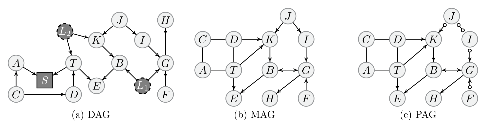
- 마르코프 동치(Markov Equivalence): 같은 정점 집합 위의 두 MAG가 동일한 m-분리 관계 집합을 함의하면 마르코프 동치입니다. MAG \(\mathcal{M}\)의 동치류를 \([\mathcal{M}]\)으로 씁니다.
- \(\mathcal{M}\)의 엣지 마크가 \([\mathcal{M}]\)의 모든 MAG에서 동일하게 나타나면 그 마크를 불변(invariant)이라 합니다.
- 부분 조상 그래프(PAG, \(\mathcal{P}\)): \([\mathcal{M}]\)을 나타내는 그래프로, \(\mathcal{M}\) 및 \([\mathcal{M}]\)의 임의 원소와 동일한 인접성을 갖습니다. 마크가 \([\mathcal{M}]\)에서 불변이면 꼬리 ‘\(-\)’ 또는 화살촉 ’\(>\)’가, 그렇지 않으면 원 ‘\(\circ\)’가 나타납니다.
논문은 (Zhang, 2006, 2008)의 용어를 따라 완전(complete) 혹은 최대 방향지어진(maximally oriented) PAG만을 다루며, 이후 ’PAG’라는 용어는 항상 이 의미로 씁니다. PAG는 \(P_{\mathrm{obs}}(\mathbf{O})\)로부터 식별 가능한 인과 정보의 최대로 유익한 요약입니다.
3.3 문제 정식화 (Problem Formulation)
- \(\mathcal{D}\): \(\mathbf{O} \cup \mathbf{L} \cup \mathbf{S}\) 위의 밑바탕 인과 DAG
- \(\mathcal{M}\): 잠재변수를 주변화하고 미관측 선택 변수로 조건화하여 \(\mathbf{O}\) 위에 유도된 MAG
- \(\mathcal{P}\): 마르코프 동치류 \([\mathcal{M}]\)을 나타내는 PAG
Goal. 표준 인과 마르코프 조건과 충실성 조건(Spirtes et al., 2000) 하에서, 목표 변수 \(T \in \mathbf{O}\)가 주어졌을 때 관측 분포 \(P_{\mathrm{obs}}(\mathbf{O})\)로부터 \(\mathbf{O}\) 위의 전역 구조를 복원하지 않고 \(T\) 주변의 국소 인과 구조를 학습하는 것이 목표입니다. 구체적으로는 \(P_{\mathrm{obs}}(\mathbf{O})\)로부터 식별 가능한 \(T\)의 직접 원인과 직접 결과를 찾아내되, 그 국소 구조가 전역 인과 발견(즉 PAG \(\mathcal{P}\))에서 얻을 수 있는 목표 특화 인과 정보와 일치해야 합니다.
여기서 “일치해야 한다”는 요구가 이 논문의 성격을 결정합니다. 국소 방법이 전역 방법의 근사가 되는 것이 아니라, 목표 주변에 한해서는 정확히 같은 답을 내야 한다는 것이 목표 수준입니다.
4. 국소 인과 구조 학습 (Local Causal Structure Learning)
이 절은 두 개의 질문으로 조직됩니다.
★ Q1. 모든 관측 변수 위의 전역 구조 학습을 어떻게 피할 것인가? → §4.1
★ Q2. 그런 국소 영역이 주어졌을 때, 그 영역에서 학습된 어떤 구조 정보가 전역 PAG와 일치함이 보장되는가? → §4.2
그리고 §4.3이 이 둘을 결합해 LoCaLS를 제시하며, §4.4가 복잡도를 분석합니다.
4.1 잠재변수와 선택 편향 하의 마르코프 블랭킷 (Markov Blanket under Latent Variables and Selection Bias)
마르코프 블랭킷(MB)은 Pearl (1988)이 처음 도입한 이래 특징 선택과 차원 축소의 기초 원리가 되었습니다(Guyon & Elisseeff, 2003; Pellet & Elisseeff, 2008b). 직관적으로 목표 변수 \(X\)의 MB는 다른 어떤 변수도 제공하지 못하는 \(X\)에 관한 모든 관련 정보를 담은 최소 집합입니다(Aliferis et al., 2010).
\(\mathbf{V}\)를 변수 집합, \(X \in \mathbf{V}\)라 하자. 집합 \(\mathbf{B} \subseteq \mathbf{V} \setminus \{X\}\)가 \(X\)의 마르코프 블랭킷 \(\mathrm{MB}(X)\)라 함은 다음 두 조건을 만족함을 뜻한다.
- (i) MB 성질: 모든 \(V \in \mathbf{V} \setminus (\mathbf{B} \cup \{X\})\)에 대해 \(X \perp\!\!\!\perp V \mid \mathbf{B}\).
- (ii) 최소성(minimality): 위 성질을 만족하는 진부분집합 \(\mathbf{B}' \subsetneq \mathbf{B}\)가 존재하지 않는다.
일부 문헌은 최소성을 요구하지 않는 “Markov blanket”과 엄밀히 최소인 “Markov boundary”를 구분하지만, 이 논문은 MB가 최소성을 본래 함의하는 관례를 택합니다.
DAG의 MB에서 MAG의 MB로
인과 충실성 하에서 DAG \(\mathcal{D}\)의 정점 \(X\)의 마르코프 블랭킷은 유일하며, \(X\)의 부모, 자식, 그리고 자식의 부모로 구성된다.
Remark 1. 잠재변수도 선택 편향도 없다는 이상화된 가정은 실제 상황에서 자주 위배됩니다. 잠재변수 존재 하에서 정점 \(X\)의 MB에 대한 그래프적 특성화는 이미 확립되어 있습니다(Richardson, 2003; Pellet & Elisseeff, 2008a; Yu et al., 2018). 그러나 이 연구들은 선택 편향을 고려하지 않습니다. 이 빈틈을 메우기 위해 Definition 9를 도입합니다.
인과 충실성 하에서, 잠재변수와 선택 편향을 모두 허용하며, 관측 변수 \(\mathbf{O}\) 위의 MAG \(\mathcal{M}\)을 생각하자. 정점 \(X\)의 마르코프 블랭킷 \(\mathrm{MB}(X, \mathcal{M})\)은 다음의 합집합이다.
- (i) \(X\)의 부모, 자식, 무향 이웃
- (ii) \(X\)의 자식의 부모
- (iii) \(X\)의 지구(district) — 양방향 엣지만을 따라 \(X\)로부터 도달 가능한 정점 집합 — 와 \(X\)의 자식들의 지구
- (iv) 위 지구들에 속한 모든 정점의 부모
Definition 8과 비교하면 무엇이 추가되었는지가 선명합니다.
| 항목 | DAG의 MB | MAG의 MB | 추가된 이유 |
|---|---|---|---|
| 부모 · 자식 · 자식의 부모 | ✓ | ✓ | 공통 |
| 무향 이웃 | ✗ | ✓ | 선택 편향이 만드는 \(-\) 엣지 |
| 지구(district) | ✗ | ✓ | 잠재 교란이 만드는 \(\leftrightarrow\) 엣지 |
| 지구 구성원의 부모 | ✗ | ✓ | 지구를 통해 들어오는 정보 통로 차단 |
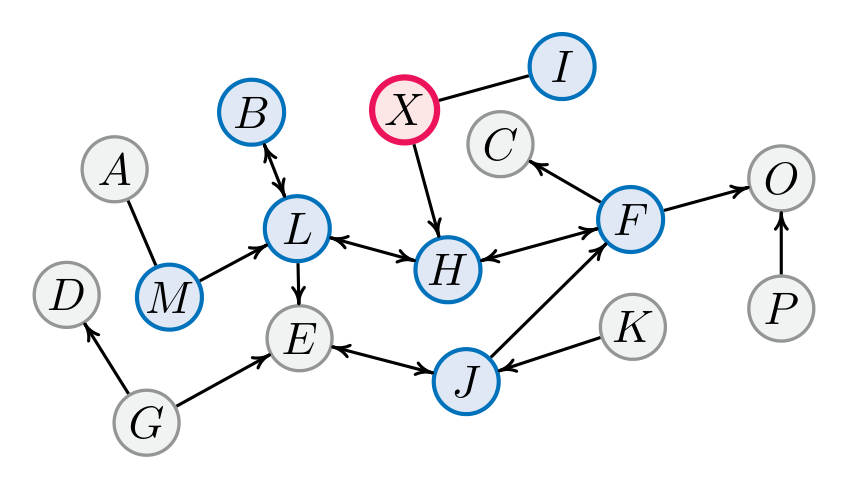
Example 2. Fig. 3의 MAG \(\mathcal{M}\)에서 목표가 \(X\)일 때,
\[\mathrm{MB}(X, \mathcal{M}) = \{B, F, H, L, M, I, J\}\]
입니다. 이 집합은 자식 \(H\), 무향 이웃 \(I\), \(X\)와 그 자식 \(H\)에 연관된 지구 구성원 \(\{B, F, L\}\), 그리고 이 지구들에 속한 정점의 부모 \(\{M, J\}\)를 포함합니다.
Definition 9의 정당화: 두 개의 보조정리
Definition 9가 정말 MB인지 — 즉 MB 성질과 최소성을 모두 만족하는지 — 를 확인해야 합니다.
Lemma 1 (MB 성질). \(\mathcal{M}\)을 \(\mathbf{O}\) 위의 MAG라 하자. 임의의 \(X \in \mathbf{O}\)에 대해, \(\mathrm{MB}(X, \mathcal{M})\)이 주어졌을 때 \(X\)는 \(\mathbf{O} \setminus (\mathrm{MB}(X, \mathcal{M}) \cup \{X\})\)의 모든 정점과 m-분리된다.
Lemma 2 (최소성). \(\mathcal{M}\)을 \(\mathbf{O}\) 위의 MAG라 하자. 임의의 \(X \in \mathbf{O}\)에 대해, \(\mathrm{MB}(X, \mathcal{M})\)의 어떤 진부분집합 \(\mathbf{B}'\)도 \(X\)를 \(\mathbf{O} \setminus (\mathbf{B}' \cup \{X\})\)의 모든 정점으로부터 m-분리하지 못한다.
두 보조정리를 결합하면 Definition 9가 정의한 집합이 실제로 \(\mathcal{M}\)에서 \(X\)의 MB임이 결론됩니다. (증명은 부록 C.1에서 다시 살펴보겠습니다.)
데이터로부터 MB를 배우는 다리: Proposition 1
이제 그래프적 정의를 검정 가능한 조건으로 옮겨야 합니다.
\(\mathcal{M}\)을 관측 변수 \(\mathbf{O}\) 위에 유도된 MAG라 하고, \(P_{\mathrm{obs}}(\mathbf{O})\)가 \(\mathcal{M}\)에 대해 마르코프이며 충실하다고 하자. 임의의 서로 다른 \(X, Y \in \mathbf{O}\)에 대해 다음이 성립한다.
\[ Y \in \mathrm{MB}(X, \mathcal{M}) \iff X \not\perp\!\!\!\perp Y \mid \mathbf{O} \setminus \{X, Y\} \tag{1} \]
Proposition 1이 왜 결정적인가를 짚어 보겠습니다.
- 이 명제는 \(X\)의 MB를, “나머지 관측 변수 전부를 조건으로 주었을 때에도 \(X\)와 여전히 종속인 변수들”로 특성화합니다.
- 따라서 MB를 조건부 독립성 검정만으로 데이터에서 학습할 수 있습니다.
- 실무적으로는 TC 알고리즘(Pellet & Elisseeff, 2008b) 같은 방법을 그대로 적용할 수 있으며, 관측 변수 개수에 대해 선형 개수의 CI 검정만으로 MB를 얻습니다.
Remark 2. 이 소절의 결과들이 Q1에 대한 답입니다. 목표 특화 인과 발견에서 마르코프 블랭킷은 압축된 국소 영역을 제공하여 전역 구조 학습을 피하게 해 줍니다. 특히 PAG \(\mathcal{P}\)는 \(\mathcal{M}\)의 마르코프 동치류를 나타내므로 관측 변수들 사이에 동일한 조건부 독립 관계를 함의합니다. Proposition 1에 의해 동일한 마르코프 블랭킷이 MAG·PAG·관측 분포 세 가지로 동등하게 특성화됩니다.
\[\mathrm{MB}(X, \mathcal{M}) = \mathrm{MB}(X, \mathcal{P}) = \mathrm{MB}(X, P_{\mathrm{obs}}(\mathbf{O}))\]
따라서 이후로는 이를 그냥 \(\mathrm{MB}(X)\)로 쓰고, MB 기반 도구적 국소 영역(instrumental local region)을 다음과 같이 정의합니다.
\[ \mathrm{MB}^{+}(X) = \mathrm{MB}(X) \cup \{X\} \]
4.2 국소 구조 학습의 토대 (Foundations of Local Structure Learning)
이 소절 전체에서 \(\mathcal{L}_X\)는 오라클 설정에서, \(\mathrm{MB}^{+}(X)\) 위의 주변 선택 분포 \(P_{\mathrm{obs}}(\mathrm{MB}^{+}(X))\)로부터 건전하고 완전한 PAG 학습 절차로 얻은 PAG를 뜻합니다.
\(\mathrm{MB}^{+}(X)\)를 국소 영역으로 확정했으니 이제 Q2로 넘어갑니다. 이 질문이 자명하지 않은 이유는 다음과 같습니다.
\(\mathrm{MB}^{+}(X)\) 위의 주변분포로부터 인과 구조를 학습한다고 해서, 그것이 일반적으로 모든 관측 변수 위의 전역 인과 발견이 얻어 낼 구조를 자동으로 재현하지는 않습니다.
일부 정보는 국소적으로만 참이고, 일부는 전역에는 있으나 국소에서는 복원 불가능합니다. 그러므로 우리는 국소 PAG \(\mathcal{L}_X\)와 전역 PAG \(\mathcal{P}\)를 잇는 이론적 다리를 놓아야 합니다.
★ 국소적으로 학습된 구조 \(\mathcal{L}_X\) 안의 어떤 인접 관계와 방향 정보가 전역 PAG \(\mathcal{P}\)와 일치함이 보장되는가?
4.2.1 인접성의 일치: Theorem 1과 Corollary 1
핵심 관찰은 이것입니다. MAG에서 목표 변수 \(X\)가 다른 관측 변수와 m-분리될 수 있는지 여부는 오직 \(X\)의 MB만으로 판정할 수 있다.
\(\mathcal{M}\)을 \(\mathbf{O}\) 위의 밑바탕 MAG, \(X \in \mathbf{O}\)를 목표 변수라 하자. 임의의 \(V \in \mathrm{MB}(X)\)에 대해,
\[ \exists\, \mathbf{Z} \subseteq \mathbf{O} \setminus \{X, V\} \text{ 가 } X, V \text{를 m-분리} \iff \exists\, \mathbf{Z}' \subseteq \mathrm{MB}(X) \setminus \{V\} \text{ 가 } X, V \text{를 m-분리} \]
Theorem 1은 \(X\)와 그 MB 안의 임의의 정점 사이의 분리 가능성 판정이 국소 영역 \(\mathrm{MB}^{+}(X)\) 안에서 끝난다는 것을 말합니다. 여기에 MB 성질을 결합하면 \(X\)에 인접한 엣지들의 국소적 특성화를 얻습니다.
- 임의의 \(V \in \mathbf{O} \setminus \{X\}\)에 대해, \(X\)와 \(V\)의 분리집합 \(\mathbf{Z} \subseteq \mathbf{O} \setminus \{X, V\}\)가 존재한다면, Theorem 1은 국소 분리집합 \(\mathbf{Z}' \subseteq \mathrm{MB}^{+}(X) \setminus \{X, V\}\)의 존재를 보장합니다.
- 역으로, \(\mathrm{MB}^{+}(X) \setminus \{X, V\}\) 안에 국소 분리집합이 존재하지 않는다면, \(\mathbf{O} \setminus \{X, V\}\) 안에도 분리집합이 존재하지 않습니다.
즉 \(X\)와 임의의 정점 사이의 인접 여부는 MB 기반 국소 영역만으로 결정됩니다.
Corollary 1. \(\mathcal{L}_X\)를 \(\mathrm{MB}^{+}(X)\) 위에서 추론된 국소 구조라 하고 \(V \in \mathrm{MB}(X)\)라 하자. 그러면 \(X\)와 \(V\)는 \(\mathcal{L}_X\)에서 인접할 필요충분조건으로 전역 PAG \(\mathcal{P}\)에서 인접한다.
Corollary 1은 \(\mathcal{L}_X\)에서 \(X\)에 인접한 모든 엣지가 전역 PAG에서 \(X\)에 인접한 엣지와 정확히 동일함을 함의합니다. 따라서 \(\mathrm{MB}^{+}(X)\) 위의 국소 학습은 전역 인과 발견이 얻어 낼 목표 특화 인접성 정보를 그대로 보존합니다.
인과 구조 학습은 보통 ① 골격(skeleton) 결정 → ② 방향(orientation) 결정의 두 단계로 진행됩니다. Corollary 1은 ①이 국소적으로 완벽하게 해결됨을 말합니다. 남은 문제는 ②인데, 여기서는 사정이 훨씬 미묘합니다 — 방향 정보 중 일부만 국소적으로 신뢰할 수 있기 때문입니다. 다음 두 정리가 그 “일부”를 정확히 잘라 냅니다.
4.2.2 방향 정보의 일치: Theorem 2와 Theorem 3
\(\mathcal{L}_X\)를 \(\mathrm{MB}^{+}(X)\) 위에서 추론된 국소 구조라 하고, \(V_i\) (\(1 \le i \le |\mathrm{MB}(X)|\))를 \(\mathrm{MB}(X)\)의 정점들이라 하자. 그러면 비피복 충돌자 경로
\[ X \ast\!\!\to V_1 \leftrightarrow \cdots \leftarrow\!\!\ast\, V_i \]
가 \(\mathcal{L}_X\)에 존재할 필요충분조건으로 동일한 비피복 충돌자 경로가 전역 PAG에 존재한다.
같은 설정에서, 비차폐 충돌자 삼중항
\[ V_1 \ast\!\!\to X \leftarrow\!\!\ast\, V_2 \]
가 \(\mathcal{L}_X\)에 존재하면, 동일한 삼중항이 전역 PAG에도 존재한다.
두 정리를 함께 읽으면 다음 결론이 나옵니다.
현재 목표 \(X\)를 포함하며 국소적으로 학습된 \(\mathcal{L}_X\)에서 식별된 충돌자 방향 정보는 전역 PAG에 대해 건전(sound)하다.
주의할 차이가 하나 있습니다. Theorem 2는 필요충분(⟺)이지만 Theorem 3은 한 방향(⟹)뿐입니다. 즉 국소에서 발견된 비차폐 충돌자 삼중항은 반드시 전역에도 있지만, 전역에 있는 삼중항이 국소에서 반드시 발견되지는 않습니다. 그 이유가 다음 Remark 3의 두 번째 항목입니다.
4.2.3 이 결과들이 덮지 못하는 것: Remark 3
Remark 3. 위 결과들이 모든 충돌자 정보를 덮는 것은 아닙니다.
- \(\mathcal{L}_X\) 안에서 현재 목표 \(X\)를 포함하지 않는 충돌자 정보는 신뢰할 수 없습니다.
- 전역 PAG 안에서 \(X\)를 포함하는 충돌자 정보 중 일부는 \(\mathrm{MB}^{+}(X)\)로부터 복원되지 않을 수 있습니다.
Fig. 2(c)의 전역 PAG를 기준으로 두 경우를 하나씩 살펴보겠습니다.
- ① 가짜(Spurious): 목표를 \(B\)로 두고 Fig. 4(a)의 \(\mathcal{L}_B\)를 봅시다. \(\mathrm{MB}^{+}(B)\) 위의 주변분포에서는 \(T \perp\!\!\!\perp I \mid \emptyset\)이지만 \(T \not\perp\!\!\!\perp I \mid K\)이므로 \(T \ast\!\!\to K \leftarrow\!\!\ast\, I\)를 식별하게 됩니다. 그러나 전역 구조에서 대응하는 충돌자는 \(T \ast\!\!\to K \leftarrow\!\!\ast\, J\)이지 \(I\)가 아닙니다. 목표 \(B\)를 포함하지 않는 충돌자였기에 어긋난 것입니다.
- ② 누락(Missing): 목표를 \(E\)로 두면 \(\mathrm{MB}^{+}(E) = \{B, E, T\}\)이고 국소 그래프는 Fig. 4(b)의 \(\mathcal{L}_E\)입니다. 전역 PAG에는 비피복 충돌자 \(T \ast\!\!\to E \leftarrow\!\!\ast\, B\)가 있지만, \(T\)와 \(B\)의 분리집합(즉 \(K\))이 \(\mathrm{MB}^{+}(E)\) 안에 없기 때문에 이 충돌자는 국소 주변분포로부터 식별될 수 없습니다.
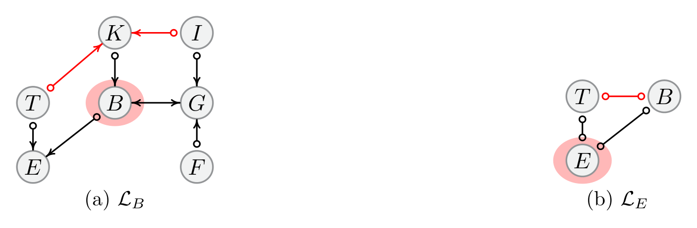
Remark 3이 단순한 주의사항이 아니라는 점이 중요합니다.
- ①(가짜) 때문에 LoCaLS는 국소 그래프 \(\mathcal{L}_X\)를 통째로 \(\hat{\mathcal{P}}\)에 반영하지 않고,
PreserveConsistentInfo라는 별도 단계를 두어 보장된 정보만 걸러 냅니다. - ②(누락) 때문에 LoCaLS는 한 번의 국소 학습으로 끝내지 않고 Waitlist를 두어 다른 변수들의 국소 구조를 순차적으로 더 학습합니다. \(E\)의 MB에서 못 찾은 충돌자를 \(T\)나 \(K\) 쪽 국소 학습에서 찾아낼 수 있기 때문입니다.
즉 §4.3 알고리즘의 두 가지 특이한 설계 — 정보 선별과 순차 확장 — 는 모두 Remark 3에 대한 대응입니다.
4.3 LoCaLS 알고리즘 (The LoCaLS Algorithm)
§4.1–4.2의 결과 위에서 알고리즘을 조립합니다. LoCaLS는 목표 변수 \(T\)에서 출발해 마르코프 블랭킷 기반 영역들에 대해 국소 구조를 순차적으로 학습합니다.
Algorithm 1: LoCaLS
────────────────────────────────────────────────────────────────────
input : 목표 변수 T, 관측 변수 O 위의 데이터
output: 학습된 P̂ 안의 T 주변 국소 구조
1: Waitlist ← {T}, Donelist ← ∅, P̂ ← ∅, Sepsets ← ∅ 으로 초기화
2: repeat
3: X ← Waitlist 의 첫 번째 변수
4: MB⁺(X) ← MBLearn(X) # Proposition 1 기반 (예: TC)
5: (L_X, Sepsets_X) ← LocalLearn(MB⁺(X)) # 예: FCI / ICD / L-MARVEL
6: Sepsets ← Sepsets ∪ Sepsets_X
7: P̂ ← PreserveConsistentInfo(P̂, L_X, X) # Cor.1 / Thm.2 / Thm.3 만 반영
8: P̂ ← OrientPAG(P̂, Sepsets) # 부록 D.1의 완전한 방향 규칙
9: X 를 Donelist 에 추가
10: Waitlist ← UpdateWaitlist(T, P̂, Donelist)
11: until 정지 규칙 R1–R3 중 하나가 만족될 때까지
12: return P̂ 안의 T 주변 국소 구조
────────────────────────────────────────────────────────────────────알고리즘이 유지하는 네 개의 객체
| 객체 | 역할 |
|---|---|
| Waitlist | 원래 목표 \(T\) 주변의 국소 인과 구조를 결정하는 데 유용한 정보를 줄 수 있는 미처리 변수들 |
| Donelist | 이미 처리된 변수들의 기록 |
| \(\hat{\mathcal{P}}\) | 전역 PAG와의 일치가 보장되는 국소 학습 구조 정보의 누적 저장소 |
| Sepsets | 국소 구조 학습 중 얻은 분리집합들. 이후 PAG 방향 결정에 사용 |
각 반복에서 알고리즘은 Waitlist에서 변수 \(X\)를 꺼내, MBLearn(Pellet & Elisseeff, 2008b)으로 MB 기반 국소 영역 \(\mathrm{MB}^{+}(X)\)를 식별하고, 그 위의 주변분포에 제약 기반 학습기 LocalLearn(Spirtes et al., 1995; Akbari et al., 2021; Rohekar et al., 2021)을 적용해 국소 구조 \(\mathcal{L}_X\)와 분리집합 \(\mathrm{Sepsets}_X\)를 얻습니다. 그다음 §4.2가 정당화한 정보만 PreserveConsistentInfo로 걸러 \(\hat{\mathcal{P}}\)에 반영하고, 완전한 PAG 방향 규칙 OrientPAG(부록 D.1)를 적용합니다.
정지 규칙 (Stopping Rules)
Waitlist를 거칠게(coarse) 갱신한다고 — 예컨대 현재 그래프 \(\hat{\mathcal{P}}\)에서 \(T\)와 연결된 미처리 정점을 전부 넣는다고 — 하면, 다음 세 규칙이 종료에 충분합니다.
\(T\)를 목표 변수, Waitlist를 현재 처리 대기 변수 집합이라 하자. 다음 중 하나라도 만족되면, \(T\)에 대해 식별된 국소 구조(직접 원인과 직접 결과 포함)는 전역 인과 발견으로부터 얻는 목표 특화 구조와 동치이다.
- R1. 목표 \(T\)에 인접한 모든 엣지 마크가 결정되었다.
- R2. Waitlist가 비었다.
- R3. 임의의 미처리 변수로부터 \(T\)로 가는 모든 경로가 \(T\)를 향한 잠재적 선행 경로(potentially anterior path)가 아니다.
여기서 경로 \(\pi = \langle V_1, V_2, \dots, T \rangle\)가 \(T\)를 향한 잠재적 선행 경로가 아니라 함은, \(\pi\) 위에 어떤 정점 \(V_i\)가 존재하여 그 정점에 인접한 \(\pi\) 상의 엣지가 \(V_i\)로 들어오는 화살촉을 갖는 경우(즉 \(V_i \leftarrow\!\!\ast\) 형태)를 말한다.
- R1, R2는 직접적인 종료 기준입니다. 관심 있는 인과 정보가 모두 식별되었거나, 모든 변수가 처리되었다는 뜻이지요.
- R3는 구조적 잉여성(structural redundancy) 조건입니다. 남은 미처리 변수들의 국소 구조를 계속 배워도 \(T\) 주변 구조를 결정하는 데 추가 정보가 나오지 않는다는 것입니다. 직관적으로, 남은 변수들이 \(T\)로 가는 잠재적 유향 경로를 갖지 않으면 그들의 인과 정보는 \(T\) 쪽으로 전파될 수 없고, 따라서 목표 특화 국소 구조를 더 정교하게 만들 수 없습니다.
실무에서는 더 선별적인(selective) Waitlist 갱신을 씁니다. \(T\)와 연결된 정점을 전부 넣는 대신, UpdateWaitlist는 현재 그래프 \(\hat{\mathcal{P}}\)에서 \(T\)로 가는 잠재적 선행 경로를 여전히 갖는 정점만 남깁니다(부록 D.2의 Algorithm 4). 그 결과 R3가 배제하는 정점들은 자동으로 고려 대상에서 빠지며, 알고리즘은 R1과 R2만 명시적으로 검사하면 됩니다.
Example 3: LoCaLS의 실제 진행
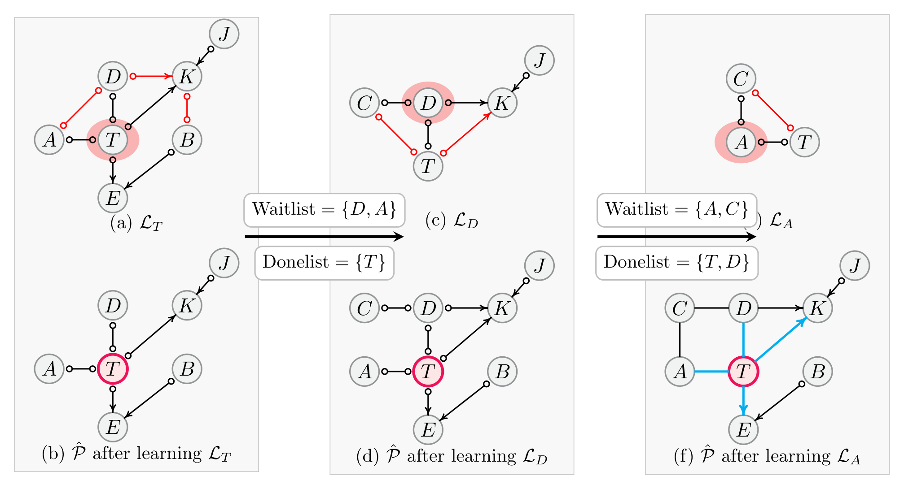
Example 3. 오라클 CI 검정을 가정하고 \(T\)를 목표 변수로, Fig. 2(c)를 참 PAG로 둡니다. 알고리즘은 \(\mathrm{Waitlist} = \{T\}\), \(\mathrm{Donelist} = \emptyset\), \(\hat{\mathcal{P}} = \emptyset\)에서 시작합니다.
- \(T\) 처리. Waitlist에서 \(T\)를 선택하고 MB 기반 국소 영역 \(\mathrm{MB}^{+}(T) = \{A, B, D, E, J, K, T\}\)를 식별합니다. 그 위의 주변분포로부터 Fig. 5(a)의 \(\mathcal{L}_T\)를 학습하고, 전역 PAG와의 일치가 보장되는 정보만 보존합니다(붉은 엣지는 폐기). 결과는 Fig. 5(b)이고, \(\mathrm{Donelist} = \{T\}\), \(\mathrm{Waitlist} = \{D, A\}\)로 갱신됩니다.
- \(D\) 처리. \(\mathrm{MB}^{+}(D) = \{C, D, J, K, T\}\)를 식별하고 Fig. 5(c)의 \(\mathcal{L}_D\)를 학습합니다. 다시 보장된 정보만 \(\hat{\mathcal{P}}\)에 편입하고 \(\mathcal{L}_D\)의 붉은 엣지는 버립니다(Fig. 5(d)). \(\mathrm{Donelist} = \{T, D\}\), \(\mathrm{Waitlist} = \{A, C\}\).
- \(A\) 처리. \(\mathrm{MB}^{+}(A) = \{A, C, T\}\)를 식별하고 Fig. 5(e)의 \(\mathcal{L}_A\)를 학습합니다. 보장된 정보를 편입하고 방향 규칙을 적용하면 Fig. 5(f)를 얻습니다. 이 시점에서 \(T\) 주변 국소 구조가 확정됩니다.
\[A - T, \qquad D - T, \qquad T \to K, \qquad T \to E\]
따라서 정지 규칙 R1이 만족되어 알고리즘은 \(\hat{\mathcal{P}}\) 안의 \(T\) 주변 국소 구조를 반환합니다.
전체 정확성 보장
인과 마르코프 조건과 충실성 조건, 그리고 \(P_{\mathrm{obs}}(\mathbf{O})\)의 조건부 독립 관계에 대한 오라클 접근을 가정하자. 그러면 LoCaLS는 전역 PAG \(\mathcal{P}\)로부터 식별 가능한 목표 변수 \(T\)의 직접 원인과 직접 결과를 식별한다. 동등하게, 출력 \(\hat{\mathcal{P}}\)에서 \(T\)에 인접한 엣지들과 그 식별 가능한 끝점 마크는 전역 PAG \(\mathcal{P}\)의 것과 일치한다.
이 정리의 의미를 다시 강조하면, LoCaLS는 전역 방법의 근사가 아니라 목표 주변에 한해 정확히 같은 답을 냅니다. “국소적이라서 조금 덜 정확하다”는 통상적 타협이 여기에는 없습니다.
4.4 복잡도 분석 (Complexity Analysis)
- \(|\mathbf{O}|\): 관측 변수의 개수
- \(r\): LoCaLS가 순차적으로 학습하는 국소 구조의 개수
- \(|\mathrm{MB}|\): 절차 중 마주치는 최대 MB 크기
- \(L(\cdot)\): 국소 학습기의 시간 복잡도를 탐색 공간 크기의 함수로 본 것
LoCaLS의 계산 비용은 두 성분으로 나뉩니다.
① MB 학습을 통한 국소 탐색 공간 식별. TC(Pellet & Elisseeff, 2008b) 같은 MB 발견 알고리즘을 쓰면 하나의 변수에 대한 MB 학습이 \(O(|\mathbf{O}|)\)이므로, \(r\)개 변수의 MB 학습 비용은
\[ O(r|\mathbf{O}|) \]
로 유계입니다.
② 국소 탐색 공간 안에서의 인과 구조 학습. 국소 학습기로 FCI 같은 제약 기반 알고리즘을 쓴다고 하면, \(r\)개의 국소 부분문제 전체에 대한 비용은
\[ O\big(r\, L(|\mathrm{MB}|)\big) \]
입니다.
③ 합산. 두 성분을 더하면 LoCaLS의 전체 복잡도는
\[ O\big(r\,(|\mathbf{O}| + L(|\mathrm{MB}|))\big) \]
로 유계입니다. MB 크기는 보통 전체 관측 변수 수보다 훨씬 작으므로(\(|\mathrm{MB}| \ll |\mathbf{O}|\)), LoCaLS는 모든 관측 변수에 전역 인과 발견 알고리즘을 적용하는 것에 비해 계산 부담을 실질적으로 크게 줄일 수 있습니다.
전역 제약 기반 방법의 비용은 대체로 \(L(|\mathbf{O}|)\) 꼴이고, \(L(\cdot)\)은 조건화 집합의 조합 폭발 때문에 인자에 대해 초선형(대개 지수적)으로 증가합니다. LoCaLS는 이 \(L\)의 인자를 \(|\mathbf{O}|\)에서 \(|\mathrm{MB}|\)로 바꿔치기하고, 대신 \(r\)번 반복하는 대가를 치릅니다. 희소 그래프에서 \(|\mathrm{MB}|\)가 상수 수준으로 유지되고 \(r\)이 작다면 이 교환은 압도적으로 유리합니다 — §5의 실험이 정확히 그 그림을 보여 줍니다.
5. 실험 (Experiments)
5.1 비교 방법 (Baseline Methods)
전역·국소를 아우르는 폭넓은 비교군을 둡니다.
- 전역 방법 — 잠재변수·선택 편향을 가정하지 않는 부류: PC(Spirtes & Glymour, 1991), EEMBI-PC(Dong & Gao, 2025)
- 전역 방법 — 잠재변수·선택 편향을 허용하는 부류: FCI(Spirtes et al., 1995), RFCI(Colombo et al., 2012b), FCI+(Claassen et al., 2013), L-MARVEL(Akbari et al., 2021), ICD(Rohekar et al., 2021)
- 국소 방법 — 잠재변수·선택 편향 없음 가정: PCD-by-PCD(Yin et al., 2008), MB-by-MB(Wang et al., 2014), CMB(Gao & Ji, 2015), PSL(Ling et al., 2022b), GraN-LCS(Liang et al., 2023)
- 국소 방법 — 잠재변수는 허용하나 선택 편향은 미고려: LatentLCD(Ling et al., 2025b)
전역 방법들은 LoCaLS가 전체 구조 학습 비용을 치르지 않고도 비슷한 구조 정확도에 도달하는지를 재는 기준선 역할을 하고, 국소 방법들은 잠재변수·선택 편향을 다루지 못한다는 점에서 정확도 격차의 원인을 드러냅니다.
실험 설정: 별도 명시가 없는 한 각 방법의 공식 구현이 제공하는 기본 하이퍼파라미터를 씁니다. CI 검정 기반 방법들은 비교 가능성을 위해 모두 유의수준 \(\alpha = 0.01\)로 통일합니다. 하드웨어는 Intel i9-14900K CPU와 64GB RAM입니다.
5.2 평가 지표 (Evaluation Metrics)
목표 특화 구조 정확도와 효율성의 두 축으로 평가합니다. 목표가 \(T\) 주변 국소 구조 복원이므로, 모든 구조 정확도 지표는 \(T\)에 인접한 엣지 마크에 대해서만 계산됩니다.
- Mark-Precision: 예측된 국소 엣지 마크 중 맞은 비율
- Mark-Recall: 참 국소 엣지 마크 중 복원된 비율
- Mark-F1: 위 둘의 조화평균
- Local-SHD: 목표 주변의 총 구조 불일치. 누락 인접성, 허위 인접성, 잘못된 엣지 마크를 모두 벌점화
- 효율성: CI 검정 횟수와 실행 시간
따라서 Mark-Precision·Recall·F1은 높을수록, Local-SHD·CI 검정 횟수·실행 시간은 낮을수록 좋습니다. (지표들의 형식적 정의는 부록 F.2에서 다시 다루겠습니다.)
5.3 차원을 변화시킨 랜덤 구조 (Random Structures with Varying Dimensions)
데이터 생성 설계를 순서대로 정리하면 다음과 같습니다.
- 구조: Erdős–Rényi 모형 \(\mathrm{ER}(n, d)\)(Erdős & Rényi, 1960)에서 랜덤 인과 구조를 생성합니다. \(n\)은 \(\mathbf{V}\)의 변수 개수, \(d\)는 기대 평균 차수입니다. 여기서는 \(d = 2\)로 고정하고 \(n \in \{20, 40, 60, 80, 120, 160, 200\}\)으로 변화시킵니다.
- 모수화: 각 구조를 선형 가우시안 SCM으로 모수화합니다. 인과 계수는 \([-1, -0.5] \cup [0.5, 1]\)에서 균등 추출하고, 잡음항은 표준 정규분포에서 독립적으로 뽑습니다.
- 잠재변수·선택 변수 주입: 변수의 5%를 잠재변수로, 또 다른 5%를 미관측 선택 변수로 무작위 지정합니다(\(|\mathbf{L}| = |\mathbf{S}| = 5\% \cdot n\)).
- 잠재변수는 밑바탕 DAG에서 자식이 둘 이상인 정점 중에서 고릅니다 — 주변화가 실제로 잠재 교란을 유도하도록 하기 위함입니다.
- 선택 변수는 부모가 둘 이상인 정점 중에서 고릅니다 — 조건화가 실제로 선택 효과를 유도하도록 하기 위함입니다.
- 선택 편향 메커니즘(Versteeg et al., 2022 방식): 먼저 초기 표본 풀을 생성한 뒤, 총 선택 점수 \(\sum \mathbf{s}\)가 초기 표본의 순위 구간 \([0.5, 0.9]\)에 드는 표본만 남깁니다. 목표 표본 크기에 도달할 때까지 이 과정을 반복합니다.
- 표본 크기는 모든 설정에서 1000으로 고정하고, 결과는 독립 생성된 50개 데이터셋에 대한 평균입니다. 목표 변수는 이웃이 비교적 큰 정점 중에서 고릅니다.
잠재변수 주변화와 선택 변수 조건화는 관측 변수 구조의 희소성을 바꿀 수 있으므로, 논문은 유도된 MAG의 평균 차수를 따로 보고합니다.
| 밑바탕 구조 | \(\lvert \mathbf{V} \rvert\) | \(\lvert \mathbf{O} \rvert\) | \(\lvert \mathbf{L} \rvert\) | \(\lvert \mathbf{S} \rvert\) | 유도 MAG 평균 차수 |
|---|---|---|---|---|---|
| ER(20, 2) | 20 | 18 | 1 | 1 | 2.05 ± 0.25 |
| ER(40, 2) | 40 | 36 | 2 | 2 | 2.11 ± 0.21 |
| ER(60, 2) | 60 | 54 | 3 | 3 | 2.13 ± 0.16 |
| ER(80, 2) | 80 | 72 | 4 | 4 | 2.11 ± 0.17 |
| ER(120, 2) | 120 | 108 | 6 | 6 | 2.16 ± 0.19 |
| ER(160, 2) | 160 | 144 | 8 | 8 | 2.16 ± 0.17 |
| ER(200, 2) | 200 | 180 | 10 | 10 | 2.13 ± 0.13 |
평균 차수가 대략 2.05–2.16 범위에서 유지되므로, 이 실험은 그래프 밀도 변화가 아니라 변수 개수에 대한 확장성을 재는 것임이 확인됩니다.
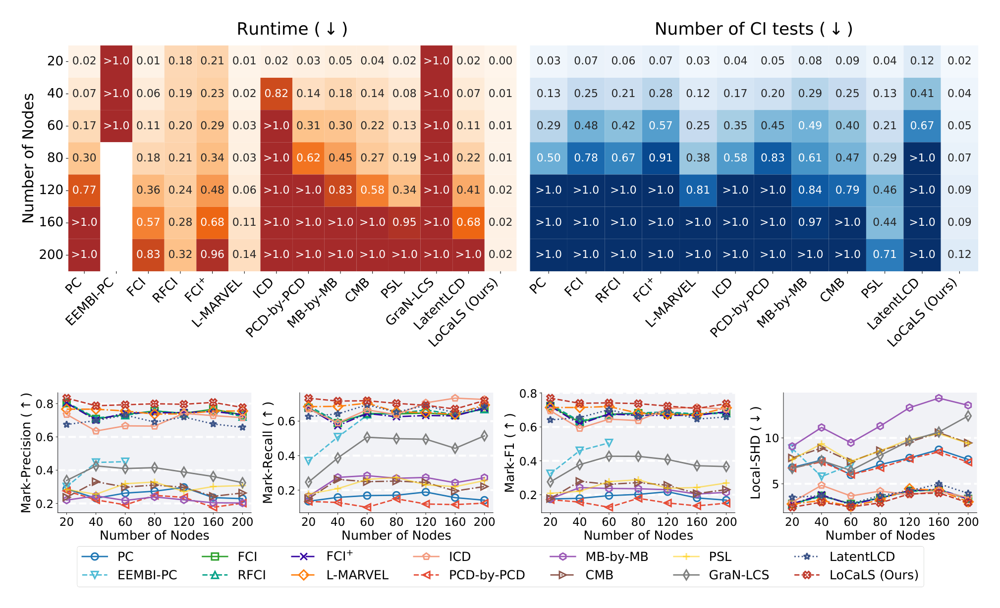
>1.0으로 표시됩니다. 맨 오른쪽 열의 LoCaLS는 \(n = 200\)에서도 실행 시간 0.02, CI 검정 0.12에 머물러, 대부분의 칸이 >1.0으로 포화된 다른 방법들과 뚜렷이 대비됩니다. 아랫줄 네 개의 꺾은선 그래프는 왼쪽부터 Mark-Precision(↑), Mark-Recall(↑), Mark-F1(↑), Local-SHD(↓)이며, 가로축은 노드 수, 각 선의 색·마커가 방법을 구분합니다(붉은 ✕ 점선이 LoCaLS). LoCaLS의 곡선이 세 정확도 지표 모두에서 상단 밴드에, Local-SHD에서는 하단 밴드에 위치합니다. 이 그림의 핵심 메시지는 효율성 이득이 정확도 희생과 맞바꾼 것이 아니라는 점 — 즉 LoCaLS가 정확도 상위권을 유지하면서 계산량만 한두 자릿수 줄인다는 것입니다.결과 해석:
- 전역 방법 대비: LoCaLS는 훨씬 적은 CI 검정과 짧은 실행 시간으로 동등하거나 더 나은 구조 정확도를 얻습니다.
- 기존 국소 방법 대비: 이들은 잠재변수·선택 편향을 고려하지 않으므로, LoCaLS가 상당히 나은 구조 정확도를 보이면서도 높은 효율을 유지합니다.
- 차원이 커질수록 과제는 모든 방법에게 어려워지지만, 전역 방법 대비 LoCaLS의 효율 우위는 고차원에서 더 뚜렷해집니다. 예를 들어 \(n = 200\)에서 LoCaLS는 \(10^3\)회 미만의 CI 검정을 수행하는 반면, 대부분의 경쟁 방법은 수천에서 수만 회를 요구합니다.
- EEMBI-PC는 실행 시간이 과도하여 일부 플롯에서 제외되었습니다.
5.4 밀도를 변화시킨 랜덤 구조 (Random Structures with Varying Density)
이번에는 밑바탕 그래프의 밀도를 변화시킵니다. \(\mathrm{ER}(n, p)\) 모형에서 \(p\)는 두 정점 사이에 엣지가 존재할 확률입니다. 밀집 영역(Mokhtarian et al., 2025; Akbari et al., 2021)의 관례를 따라 \(\log n / n\)을 기준 상한 밀도로 두고, 희소에서 밀집으로의 점진적 전이를 위해 밀도 스케일링 인자 \(s\)를 도입합니다.
\[ p = s \cdot \frac{\log n}{n} \]
\(n = 100\)으로 고정하고 \(s \in \{0.05, 0.1, 0.2, 0.4, 0.6, 0.8, 1.0\}\)으로 변화시킵니다. 나머지 설정은 §5.3과 동일합니다.
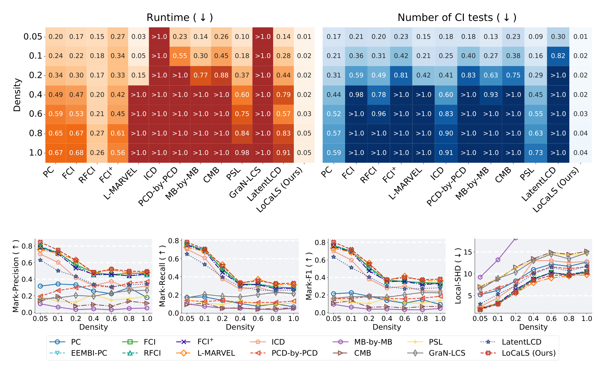
>1.0으로 표시됩니다. 히트맵 맨 오른쪽 LoCaLS 열은 가장 밀집한 \(s = 1.0\)에서도 실행 시간 0.05, CI 검정 0.04에 그치는 반면, L-MARVEL·ICD·PCD-by-PCD·MB-by-MB·CMB 등은 \(s \ge 0.4\)부터 대부분 >1.0으로 포화됩니다. 아랫줄 네 패널의 Mark-Precision·Mark-Recall·Mark-F1은 밀도가 올라갈수록 모든 방법이 함께 하강하고 Local-SHD는 함께 상승하는데, 이는 밀집 그래프에서 조건화 집합 탐색 공간이 급격히 커지기 때문입니다. 이 그림의 핵심 메시지는 밀도가 올라갈수록 LoCaLS의 효율 우위가 오히려 더 벌어진다는 점입니다 — 전역 방법과 다수의 국소 기준선이 조건화 집합 폭발로 무너지는 지점에서 LoCaLS는 거의 평평한 비용 곡선을 유지합니다.- 밀도가 올라갈수록 인과 발견은 어려워져 모든 방법이 어느 정도 성능 저하를 겪습니다 — Mark-Precision·Recall·F1의 하락 또는 Local-SHD의 증가로 나타납니다.
- 그럼에도 LoCaLS는 밀도 수준 전반에서 일반적으로 더 나은 목표 특화 정확도를 달성합니다. 특히 잠재변수·선택 편향을 고려하지 않는 기존 국소 방법들을 능가하고, 이 일반 설정을 위해 설계된 전역 방법들과도 경쟁력을 유지합니다.
- 효율에서는 명확한 우위입니다. 모든 밀도 수준에서 훨씬 적은 CI 검정과 짧은 실행 시간을 요구하며, 이 이점은 밀집 그래프에서 더 두드러집니다. 전역 방법과 다수의 국소 기준선이 더 큰 조건화 집합 탐색 공간에 시달리기 때문입니다.
5.5 실세계 벤치마크 구조 (Real-World Benchmark Structures)
Bayesian Network Repository의 네 개 실세계 벤치마크 구조 — MILDEW, BARLEY, ANDES, LINK — 에서 평가합니다. 차원은 35개에서 724개 변수까지 걸쳐 있습니다. 표본 크기는 \(\{1000, 2000, 3000, 4000\}\)으로 변화시키고 나머지 설정은 §5.3과 같습니다.
| 실세계 구조 | \(\lvert \mathbf{V} \rvert\) | \(\lvert \mathbf{O} \rvert\) | \(\lvert \mathbf{L} \rvert\) | \(\lvert \mathbf{S} \rvert\) | DAG 평균 차수 | 유도 MAG 평균 차수 |
|---|---|---|---|---|---|---|
| MILDEW | 35 | 31 | 2 | 2 | 2.63 | 3.37 ± 0.55 |
| BARLEY | 48 | 42 | 3 | 3 | 3.5 | 3.86 ± 0.30 |
| ANDES | 223 | 213 | 5 | 5 | 3.03 | 3.31 ± 0.20 |
| LINK | 724 | 694 | 15 | 15 | 3.11 | 3.19 ± 0.04 |
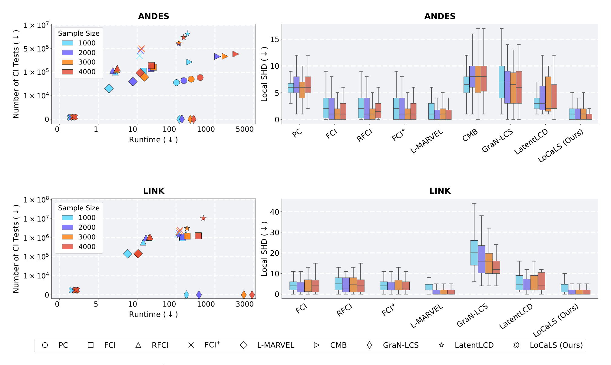
- ANDES에서 LoCaLS는 모든 표본 크기에서 약 \(10^3\)회의 CI 검정만 필요로 하며 1초 이내에 종료합니다.
- LINK(724개 변수)에서도 수천 회의 CI 검정과 수 초로 마무리됩니다.
- 정확도 측면에서 LoCaLS는 두 구조 모두에서 표본 크기가 커져도 낮고 안정적인 Local-SHD를 유지합니다. 보충 자료의 Mark-Precision·Recall·F1 곡선(부록 F.5, Figure 14)에서도 LoCaLS는 일관되게 최상위권입니다. MILDEW와 BARLEY에서도 유사한 경향이 관찰됩니다.
- 참고로 GraN-LCS는 CI 검정을 수행하지 않으므로 CI 검정 횟수가 0으로 보고되며, 일부 방법은 실행 시간이 과도하여 특정 플롯에서 제외되었습니다.
5.6 잠재변수 개수에 대한 민감도 (Sensitivity to the Number of Latent Variables)
관측 문제 크기를 고정한 채 잠재 교란의 양만 분리하여 그 효과를 봅니다.
- \(\mathrm{ER}(n, d)\)(\(n = 100\), \(d = 2\))로 관측 백본을 먼저 생성한 뒤, 밑바탕 DAG에 잠재변수와 선택 변수를 추가로 덧붙입니다.
- 잠재 비율 \(r_L \in \{0.05, 0.10, 0.15, 0.20\}\)로 변화시킵니다(\(r_L = 0.05\)면 \(5 = r_L \cdot n\)개의 잠재변수 추가).
- 잠재변수 효과에 집중하기 위해 선택 비율은 \(r_S = 0.05\)로 고정합니다.
결과는 부록 F.6에 있습니다. 잠재 비율이 올라갈수록 모든 방법이 어느 정도 구조 정확도 저하를 겪지만, LoCaLS는 훨씬 적은 CI 검정과 짧은 실행 시간이라는 이점을 유지하면서 더 높은 Mark-Precision·Recall·F1과 더 낮은 Local-SHD를 지켜 냅니다.
5.7 선택 변수 개수에 대한 민감도 (Sensitivity to the Number of Selection Variables)
§5.6을 보완하여 이번에는 선택 편향의 양만 분리합니다. 동일하게 \(n = 100\), \(d = 2\)의 관측 백본을 생성한 뒤 선택 비율 \(r_S \in \{0.05, 0.10, 0.15, 0.20\}\)으로 변화시키고, 잠재 비율은 \(r_L = 0.05\)로 고정합니다.
결과는 부록 F.7에 있습니다. 잠재변수 민감도 실험과 일관되게, 선택 비율이 커지면 모든 방법의 구조 정확도가 다소 떨어지지만 LoCaLS는 여전히 효율 우위와 정확도 우위를 동시에 유지합니다.
6. 유전자 발현 데이터 응용 (Applications to Gene Expression Datasets)
두 개의 실제 유전자 발현 데이터셋 — 33개 유전자의 저차원 애기장대(Arabidopsis thaliana) 데이터와 1,000개 이상 유전자의 고차원 흑색종(melanoma) 데이터 — 에 LoCaLS를 적용합니다. 저차원과 고차원 양쪽에서의 실효성을 함께 보기 위함입니다.
6.1 애기장대 유전자 발현 데이터 (Application to Arabidopsis thaliana Gene Expression Data)
데이터: Wille et al. (2004)의 데이터셋으로, 광(light)·암(dark) 처리와 성장 호르몬 노출을 포함한 118개 실험 조건에서 측정된 애기장대의 발현값을 담고 있습니다.
생물학적 배경: 애기장대에서 이소프레노이드(isoprenoid)는 서로 다른 세포 구획에 위치한 두 주요 경로를 통해 합성됩니다.
- MVA 경로: 세포질(cytosolic) 메발론산(mevalonate) 경로
- MEP 경로: 색소체(plastidial) 비-메발론산(non-mevalonate) 경로
데이터셋은 이 두 경로에 관여하거나 미토콘드리아에 위치한 33개 유전자를 포함합니다. 참 인과 그래프는 없지만, 생물학 연구와 기존 그래프 모형 분석은 모듈형 조직화를 시사합니다 — MEP와 MVA 경로 내 유전자들은 경로 특화적 밀집 그룹을 이루고, 두 구획 사이의 상호 소통(cross-talk)은 소수의 교량 유전자(bridge loci)를 통해 매개된다는 것입니다(Laule et al., 2003; Wille et al., 2004; Frot et al., 2019).
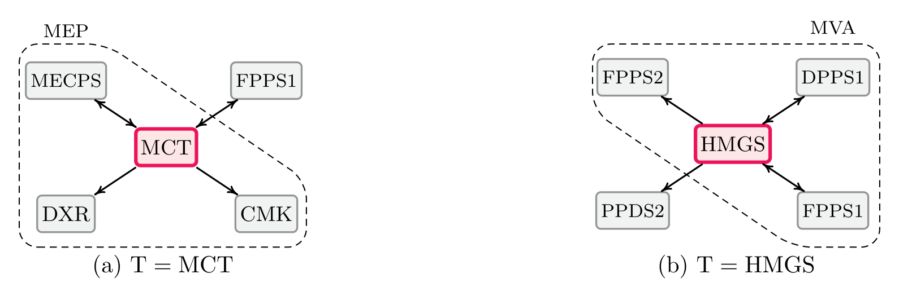
결과: Fig. 9는 대표 목표 유전자 MCT와 HMGS에 대해 학습된 국소 구조입니다. 알려진 이소프레노이드 대사 조직화 및 Wille et al. (2004, Figure 3)의 그래프 모형과 비교하면 다음이 관찰됩니다.
- ① 경로 내부 연결(Intra-pathway Connections): LoCaLS가 복원한 국소 이웃은 주로 해당 생합성 경로 내부에 집중됩니다.
- MEP 목표 MCT의 이웃으로 DXR, CMK, MECPS가 복원되며, 이는 MEP 경로의 긴밀히 연결된 구간을 이루고 Wille et al. (2004)가 보고한 경로 구조와 부합합니다.
- MVA 관련 목표 HMGS의 이웃으로 FPPS1, FPPS2, DPPS1이 복원되며, 이들은 세포질 MVA 경로에 위치합니다. 복원된 엣지들도 DPPS1이 관여한 엣지를 제외하면 Wille et al. (2004)와 일치합니다.
- ② 경로 간 연결과 방향 패턴(Cross-pathway and Orientation Patterns): 경로 국소 연결을 넘어 MCT–FPPS1, HMGS–PPDS2 같은 희소한 경로 간 연결도 식별됩니다. 이는 색소체·세포질 이소프레노이드 생합성 사이의 기존 보고된 상호 소통과 부합합니다(Laule et al., 2003). 나아가 MCT–CMK 사이와 HMGS–FPPS2 사이의 복원된 엣지 마크 정보도 알려진 생물학적 관계와 일치합니다. 남은 양방향 엣지들은 관측 유전자 집합 밖의 미측정 유전자나 조절 인자로 인한 잠재 교란 가능성을 시사합니다.
정리하면, LoCaLS는 이소프레노이드 네트워크의 주요 모듈 조직화를 보존하면서 생물학적으로 타당한 경로 간 정보를 유지하는 압축된 목표 특화 구조를 복원합니다.
6.2 흑색종 유전자 발현 데이터 (Application to Melanoma Gene Expression Data)
데이터: Frangieh et al. (2021)의 흑색종(암) 유전자 발현 데이터셋으로, 218,331개의 흑색종 세포와 23,712개 유전자, 249개 유전자를 표적으로 하는 섭동(perturbation)을 담고 있습니다. 각 세포마다 섭동 정체(표적 유전자 또는 무섭동)와 전장 유전체 발현 카운트 벡터가 기록됩니다. 세포는 세 실험 조건에서 측정되었습니다.
- 공배양(Co-culture): 환자 유래 종양 침윤 T세포와 공배양 — T세포가 흑색종 세포를 인식하고 사멸시킬 수 있는 조건
- IFN-\(\gamma\) 자극
- 대조(Control)
세 조건을 별개의 데이터셋으로 취급합니다.
전처리와 평가 설계: (Versteeg et al., 2022; Chevalley et al., 2025)를 따라 각 조건에서 섭동되지 않은 세포만 사용해 목표 유전자 주변의 국소 인과 구조를 학습하고, 참 인과 그래프가 없으므로 섭동으로 유도된 분포 변화로 학습 구조를 평가합니다. 비상수 발현을 보이며 각 조건 내 세포의 60% 이상에서 발현되는 유전자만 남깁니다. 전처리 후 조건별 규모는 다음과 같습니다.
| 조건 | 세포 수 | 유전자 수 |
|---|---|---|
| 대조(Control) | 5,039 | 1,494 |
| IFN-\(\gamma\) 자극 | 10,403 | 1,139 |
| 공배양(Co-culture) | 7,586 | 1,640 |
평가에는 양측 Mann–Whitney U 순위 검정(Mann & Whitney, 1947; Chevalley et al., 2025)을 사용합니다.
- 학습된 국소 구조에서 확정된(definite) 인과 마크 각각에 대해, 대응하는 원천 유전자를 섭동했을 때 목표 유전자의 분포가 유의하게 변하면 참 양성(true positive)으로 셉니다.
- IVR은 섭동 데이터로 검증된 국소 확정 인과 마크의 비율로 정의됩니다.
- IVR이 높을수록 개입 증거로부터의 지지가 강함을 뜻합니다.
목표 유전자: 본문의 주 결과는 B2M에 대한 것입니다. B2M은 MHC 클래스 I 항원 제시의 핵심 구성요소로 종양 면역 인식과 직결되며, Frangieh et al. (2021)이 연구한 암 면역 회피 설정에서 생물학적으로 의미 있는 표적입니다.
결과: 데이터의 고차원성 때문에 대표적인 전역·국소 기준선으로 L-MARVEL과 GraN-LCS만 보고합니다(나머지 방법은 실행 시간이 2시간을 초과).
| 조건 | 알고리즘 | Runtime ↓ | #CI Tests ↓ | IVR ↑ |
|---|---|---|---|---|
| Co-culture | L-MARVEL | 1717.59 | 13,064,931 | 0.54 |
| GraN-LCS | 2172.13 | – | 0.33 | |
| LoCaLS (Ours) | 13.35 | 177,727 | 0.91 | |
| IFN-\(\gamma\) | L-MARVEL | 810.05 | 5,632,375 | 0.52 |
| GraN-LCS | 1888.14 | – | 0.33 | |
| LoCaLS (Ours) | 52.10 | 886,062 | 0.70 | |
| Control | L-MARVEL | 19.58 | 1,194,846 | 0.50 |
| GraN-LCS | 1909.46 | – | 0.47 | |
| LoCaLS (Ours) | 4.76 | 50,286 | 0.57 |
- LoCaLS는 세 조건 모두에서 B2M에 대해 가장 높은 IVR을 달성합니다.
- 이는 LoCaLS가 학습한 국소 구조가 계산적으로 효율적일 뿐 아니라, 이 단일세포 면역 회피 데이터셋에서 섭동으로 뒷받침되는 조절 효과와 더 잘 정렬됨을 뜻합니다.
- 반대로 GraN-LCS는 가장 낮은 IVR을 보이는데, 이는 잠재변수와 선택 편향을 설명하지 못하는 그 구조적 한계와 일관됩니다.
7. 결론과 향후 연구 (Conclusion and Future Work)
이 연구는 잠재변수와 선택 편향이 존재하는 상황에서의 국소 인과 구조 학습을 다루었습니다.
- LoCaLS를 제안하여 목표 변수의 직접 원인·직접 결과를 식별합니다.
- 기존 전역 방법 대비: 표준 가정 하에서 전역 인과 발견으로부터 식별 가능한 목표 특화 정보에 대해 건전성과 완전성을 유지하면서 계산 비용을 실질적으로 줄입니다.
- 기존 국소 방법 대비: 잠재변수와 선택 편향을 모두 수용하여, 더 현실적이고 도전적인 설정을 다룹니다.
- 실험적 근거: 차원·밀도·잠재 비율·선택 비율을 변화시킨 랜덤 구조 실험 전반에서 강한 목표 특화 구조 정확도를 유지하면서 실행 시간과 CI 검정 횟수를 크게 줄였고, 네 개의 실세계 벤치마크 구조가 이를 재확인했습니다. 나아가 1,000개 이상의 유전자를 갖는 고차원 데이터를 포함한 두 유전자 발현 데이터셋 응용이 실용적 유용성을 뒷받침합니다.
향후 연구 방향은 두 가지가 제시됩니다.
- ① 추가 정보의 통합: 일부 인과 방향은 추가 가정 없이는 순수 관측 데이터만으로 본질적으로 식별 불가능하며 마르코프 동치류까지만 특성화됩니다. 따라서 데이터 생성 메커니즘에 대한 지식(Kaltenpoth & Vreeken, 2023)이나 전문가 지식(Wang et al., 2023)을 결합하여 국소 인과 구조를 더 정교화하는 방향이 중요합니다.
- ② 관측·개입 데이터의 결합: 관측 데이터와 개입 데이터를 함께 쓰는 것(Hauser & Bühlmann, 2015)은 유망한 방향입니다. 관측 조건부 독립 정보만으로는 해소할 수 없는 모호성을 개입 정보가 풀어 줄 수 있기 때문입니다.
부록 A. 보충 준비 (Appendix A. Supplementary Preliminaries)
A.1 표기 정리 (Table II)
| 기호 | 의미 |
|---|---|
| \(\mathbf{V}\) | 밑바탕 인과 시스템의 전체 변수 집합 |
| \(\mathbf{O}, \mathbf{L}, \mathbf{S}\) | 관측 변수 · 잠재 변수 · 선택 변수 집합. \(\mathbf{V} = \mathbf{O} \cup \mathbf{L} \cup \mathbf{S}\) |
| \(T \in \mathbf{O}\) | 국소 인과 구조를 복원하려는 목표 관측 변수 |
| \(\lvert \mathbf{K} \rvert\) | 변수 집합 \(\mathbf{K}\)의 크기 |
| \(\mathcal{D}\) | \(\mathbf{V}\) 위의 밑바탕 DAG |
| \(\mathcal{M}\) | \(\mathbf{O}\) 위에 유도된 MAG |
| \(\mathcal{P}\) | \(\mathbf{O}\) 위의 참(ground-truth) PAG |
| \(\hat{\mathcal{P}}\) | LoCaLS가 유지·갱신하는 PAG 추정치 |
| \(\mathcal{L}_X\) | MB 기반 영역 \(\mathrm{MB}^{+}(X)\) 위에서 국소적으로 학습된 그래프 |
| \(\mathrm{MB}(X, \mathcal{M})\), \(\mathrm{MB}(X)\) | \(\mathcal{M}\)에서 \(X\)의 마르코프 블랭킷 (식별성 확립 이후에는 공통 MB) |
| \(\mathrm{MB}^{+}(X)\) | MB 기반 국소 영역 \(\mathrm{MB}(X) \cup \{X\}\) |
| \(\mathrm{An}(X, \mathcal{G})\), \(\mathrm{An}^{+}(X, \mathcal{G})\) | \(\mathcal{G}\)에서 \(X\)의 조상 집합 / \(X\) 자신을 포함한 조상 집합 |
| \(\mathrm{Ant}(X, \mathcal{G})\), \(\mathrm{Ant}^{+}(X, \mathcal{G})\) | \(\mathcal{G}\)에서 \(X\)의 선행 정점(anterior vertices) 집합 / \(X\) 포함 버전 |
| \(\mathrm{Sepset}(X, Y)\), \(\mathrm{Sepsets}\) | \(X\)와 \(Y\)의 분리집합 / 학습 중 기록된 분리집합들의 모음 |
| \(X \perp\!\!\!\perp Y \mid \mathbf{Z}\) | \(\mathbf{Z}\) 하에서 \(X\)와 \(Y\)의 조건부 독립 (그래프적으로는 m-분리에 대응) |
| \(X \not\perp\!\!\!\perp Y \mid \mathbf{Z}\) | 위의 부정 |
| \(n, d, p, s, r_L, r_S\) | 실험 모수: 변수 개수, 기대 차수, 엣지 확률, 밀도 스케일링 인자, 잠재 비율, 선택 비율 |
A.2 부분 혼합 그래프와 추가 정의
세 종류의 마크(꼬리 ‘\(-\)’, 화살촉 ‘\(>\)’, 원 ‘\(\circ\)’)를 가질 수 있는 그래프를 부분 혼합 그래프(PMG, partial mixed graph)라 부릅니다. 따라서 PMG는 여섯 종류의 엣지 \(\to\), \(\leftrightarrow\), \(\circ\!\!\to\), \(\circ\!\!-\), \(\circ\!\!-\!\!\circ\), \(-\) 를 포함할 수 있습니다.
- Definition 10 (잠재적 선행 경로, Potentially Anterior Path): PMG에서 \(X\)와 \(Y\) 사이의 경로 \(\pi\)가 \(X\)에서 \(Y\)로의 잠재적 선행 경로라 함은, 그 경로 위에 \(X\)를 향하는 화살촉이 하나도 없는 경우를 말한다.
- Definition 11 (인과 마르코프 조건): 서로소인 임의의 부분집합 \(\mathbf{X}, \mathbf{Y}, \mathbf{Z} \subseteq \mathbf{V}\)에 대해, \(\mathcal{G}\)에서 \(\mathbf{X}\)와 \(\mathbf{Y}\)가 \(\mathbf{Z}\)에 의해 m-분리되면 \(P(\mathbf{V})\)에서 \(\mathbf{Z}\)가 주어졌을 때 조건부 독립이다.
- Definition 12 (인과 충실성 조건): 역으로, \(P(\mathbf{V})\)에서 \(\mathbf{Z}\)가 주어졌을 때 \(\mathbf{X}\)와 \(\mathbf{Y}\)가 조건부 독립이면 \(\mathcal{G}\)에서 \(\mathbf{Z}\)에 의해 m-분리된다.
이 두 조건 하에서 관측 변수들 사이의 조건부 독립 관계는 인과 그래프의 m-분리 관계와 정확히 대응합니다. 그래서 맥락이 분명할 때 \(\perp\!\!\!\perp\) 기호를 분포상의 조건부 독립과 MAG상의 m-분리에 호환적으로 씁니다.
- Definition 13 (조상과 선행 정점): \(X\)에서 \(Y\)로 가는 유향 경로 \(X \to \cdots \to Y\)가 존재하면 \(X\)는 \(Y\)의 조상이며, \(\mathcal{G}\)에서 \(X\)의 조상 집합을 \(\mathrm{An}(X, \mathcal{G})\)로 쓴다. 한편 \(X\)에서 \(Y\)로 가는 경로가 무향 엣지(\(-\))와 유향 엣지(\(\to\))만으로 이루어지고 그 경로 위 어떤 엣지도 \(X\) 쪽으로 향하지 않으면 \(X\)가 \(Y\)에 선행(anterior)한다고 하며, 그 집합을 \(\mathrm{Ant}(X, \mathcal{G})\)로 쓴다. 집합에 대해서는 \(\mathrm{An}(\mathbf{X}, \mathcal{G}) = \bigcup_{X \in \mathbf{X}} \mathrm{An}(X, \mathcal{G})\), \(\mathrm{An}^{+}(\mathbf{X}, \mathcal{G}) = \mathrm{An}(\mathbf{X}, \mathcal{G}) \cup \mathbf{X}\)로 정의하며 \(\mathrm{Ant}\)도 마찬가지다.
- Definition 14 (유도 부분그래프): \(\mathcal{G} = (\mathbf{V}, \mathbf{E})\)와 \(\mathbf{V}' \subseteq \mathbf{V}\)에 대해, \(\mathcal{G}[\mathbf{V}']\)는 정점 집합이 \(\mathbf{V}'\)이고 엣지 집합이 양 끝점이 모두 \(\mathbf{V}'\)에 속한 \(\mathcal{G}\)의 엣지들인 그래프다.
- Definition 15 (증강 그래프): 혼합 그래프 \(\mathcal{G}\)의 증강 그래프 \((\mathcal{G})^a\)는 같은 정점 집합 위의 무향 그래프로, 두 정점이 \(\mathcal{G}\)에서 충돌자 연결(collider connected)될 때에만 \((\mathcal{G})^a\)에서 인접한다.
충돌자 연결이란 두 정점 \(X\), \(Y\) 사이에 모든 비-끝점 정점이 충돌자인 경로가 존재하는 것을 말하며, \(X\)와 \(Y\)가 \(\mathcal{G}\)에서 인접한 경우도 포함합니다.
DAG만 다룰 때는 조상(ancestor)만으로 충분합니다. 그러나 선택 편향이 만드는 무향 엣지 \(-\) 가 등장하면 \(X - Y\)인 두 정점 사이에는 조상 관계가 성립하지 않는데도 정보는 흐릅니다. 선행 정점은 “유향 엣지든 무향 엣지든 나에게서 뻗어 나가는 방향으로 도달 가능한 정점”이라는, 조상 개념의 선택 편향 버전 확장입니다. 부록 C의 증명들이 \(\mathrm{An}\)이 아니라 \(\mathrm{Ant}\)로 쓰이는 이유, 그리고 정지 규칙 R3가 “잠재적 선행 경로”를 기준으로 세워진 이유가 여기 있습니다.
부록 B. DAG가 유도하는 MAG에 관한 추가 배경 (Appendix B. Additional Background on MAGs Induced by DAGs)
\(\mathcal{D}\)를 \(\mathbf{V} = \mathbf{O} \cup \mathbf{L} \cup \mathbf{S}\) 위의 밑바탕 DAG라 합시다. \(\mathbf{L}\)은 미관측이고 \(\mathbf{S}\)는 조건화되므로, 데이터로부터 얻을 수 있는 조건부 독립 정보는 서로소인 \(\mathbf{X}, \mathbf{Y}, \mathbf{Z} \subseteq \mathbf{O}\)에 대한 \(P_{\mathrm{obs}}(\mathbf{O})\) 하의 \(\mathbf{X} \perp\!\!\!\perp \mathbf{Y} \mid \mathbf{Z}\) 형태뿐입니다. MAG의 핵심 성질은 잠재·선택 변수를 명시적으로 포함하지 않고도 이 관측 가능한 조건부 독립 관계를 표현한다는 것입니다.
\(\mathcal{D}\)를 \(\mathbf{O} \cup \mathbf{L} \cup \mathbf{S}\) 위의 DAG, \(X, Y \in \mathbf{O}\)라 하자. \(\mathcal{D}\)에서 \(X\)와 \(Y\) 사이의 경로가 \((\mathbf{L}, \mathbf{S})\)에 상대적인 유도 경로라 함은,
- 경로 위의 모든 비-끝점 정점이 \(\mathbf{L}\)에 속하거나 충돌자이고,
- 경로 위의 모든 충돌자가 \(X\), \(Y\), 또는 \(\mathbf{S}\)의 어떤 변수의 조상
인 경우를 말한다.
Algorithm 2: InduceMAG from an Underlying DAG
────────────────────────────────────────────────────────────────────
input : V = O ∪ L ∪ S 위의 DAG D
output: O 위에 유도된 MAG M
1: M 을 정점 집합 O 위의 빈 혼합 그래프로 초기화
2: for all 서로 다른 쌍 A, B ∈ O do
3: if D 안에 A 와 B 사이의 (L, S)-유도 경로가 존재하면 then
4: M 에 A–B 엣지를 추가
5: end if
6: end for
7: for all M 에서 인접한 쌍 A, B do
8: if A ∈ An(B ∪ S, D) and B ∉ An(A ∪ S, D) then
9: A → B 로 방향 결정
10: else if B ∈ An(A ∪ S, D) and A ∉ An(B ∪ S, D) then
11: A ← B 로 방향 결정
12: else if A ∉ An(B ∪ S, D) and B ∉ An(A ∪ S, D) then
13: A ↔ B 로 방향 결정
14: else if A ∈ An(B ∪ S, D) and B ∈ An(A ∪ S, D) then
15: A − B 로 방향 결정
16: end if
17: end for
18: return M
────────────────────────────────────────────────────────────────────Algorithm 2가 구성한 MAG \(\mathcal{M}\)은 밑바탕 DAG의 관측 가능한 조건부 독립 구조를 보존합니다. 정확히 말하면, 서로소인 임의의 \(\mathbf{X}, \mathbf{Y}, \mathbf{Z} \subseteq \mathbf{O}\)에 대해 \(\mathcal{M}\)에서 \(\mathbf{Z}\)가 \(\mathbf{X}\)와 \(\mathbf{Y}\)를 m-분리할 필요충분조건은, \(\mathbf{L}\)을 주변화한 뒤 \(\mathcal{D}\)에서 \(\mathbf{Z} \cup \mathbf{S}\)가 이들을 d-분리하는 것입니다.
인접한 관측 변수 \(A\), \(B\)에 대해:
| 엣지 | 의미 |
|---|---|
| \(A \to B\) | \(A\)는 \(B\) 또는 어떤 선택 변수의 조상인 반면, \(B\)는 \(A\)나 어떤 선택 변수의 조상이 아니다 |
| \(A \leftrightarrow B\) | 어느 쪽도 다른 쪽이나 선택 변수의 조상이 아니다 — 인접성이 있는 상황에서 이는 대개 \(A\)–\(B\) 사이의 잠재 교란의 증거로 해석된다 |
| \(A - B\) | 양쪽 모두 상대 변수 또는 어떤 선택 변수의 조상이다. 밑바탕 인과 그래프가 비순환적이므로, 이런 무향 엣지는 선택 효과에서만 발생한다 |
마지막 줄이 이 논문 전체를 관통하는 핵심입니다. 무향 엣지의 존재 자체가 선택 편향의 지문이며, 이것이 Definition 9에서 “무향 이웃”이 MB에 편입되어야 하는 이유입니다.
부록 C. 증명 (Appendix C. Proofs)
C.1 MAG에서의 마르코프 블랭킷에 관한 결과들의 증명
Lemma 1의 증명 (MB 성질)
\(Y \in \mathbf{O} \setminus \mathrm{MB}^{+}(X, \mathcal{M})\)라 하고, \(\mathrm{MB}(X, \mathcal{M})\)이 주어졌을 때 \(X\)와 \(Y\) 사이에 m-연결 경로 \(\pi = \langle X = V_0, V_1, \dots, V_k = Y \rangle\)가 존재한다고 가정합니다. \(\pi\)의 첫 엣지 형태에 따라 경우를 나눕니다.
- (1) \(X \leftarrow V_1 \cdots Y\) 또는 \(X - V_1 \cdots Y\): \(V_1\)은 각각 \(X\)의 부모 또는 이웃이므로 \(V_1 \in \mathrm{MB}(X, \mathcal{M})\)입니다. \(V_1\)이 \(\pi\) 위의 비충돌자이므로 이 경로는 \(\mathrm{MB}(X, \mathcal{M})\)이 주어졌을 때 m-연결일 수 없습니다.
- (2) \(X \leftrightarrow V_1 \cdots Y\): \(\pi\)의 모든 엣지가 양방향이면 \(Y\)는 \(X\)의 양방향 지구에 속하므로 \(Y \in \mathrm{MB}(X, \mathcal{M})\)이 되어 가정에 모순입니다. 그렇지 않다면 \(X\)부터 \(V_i\)까지의 모든 엣지가 양방향인 가장 큰 지표 \(i\)(\(0 < i < k\))를 잡습니다. 다음 엣지는 \(V_i \to V_{i+1}\) 또는 \(V_i \leftarrow V_{i+1}\)입니다(무향 엣지 \(V_i - V_{i+1}\)은 MAG의 조상성 조건에 위배됩니다). 전자라면 \(V_i \in \mathrm{MB}(X, \mathcal{M})\)이고 비충돌자이므로 \(\pi\)를 차단하고, 후자라면 \(V_{i+1} \in \mathrm{MB}(X, \mathcal{M})\)이고 비충돌자이므로 역시 차단합니다.
- (3) \(X \to V_1 \cdots Y\): \(V_i\)와 \(V_{i+1}\) 사이 엣지가 \(V_i \to V_{i+1}\)이 아닌 가장 작은 지표 \(i\)를 잡습니다. \(i > 1\)이면 \(V_1\)이 비충돌자이면서 \(\mathrm{MB}(X, \mathcal{M})\)에 속하므로 차단됩니다. \(i = 1\)일 때, \(V_1 - V_2\)는 \(X \to V_1\)과 함께 조상성 조건에 모순이고, \(V_1 \leftarrow V_2\)면 \(V_2 \in \mathrm{MB}(X, \mathcal{M})\)이 비충돌자로 차단하며, \(V_1 \leftrightarrow V_2\)면 경우 (2)로 환원됩니다.
모든 경우에서 \(\pi\)는 m-연결일 수 없습니다. \(\blacksquare\)
Lemma 2의 증명 (최소성)
\(\mathrm{MB}'(X, \mathcal{M}) = \mathrm{MB}(X, \mathcal{M}) \setminus \mathbf{Z}\)가 여전히 MB 성질을 만족하는 비어 있지 않은 \(\mathbf{Z} \subset \mathrm{MB}(X, \mathcal{M})\)가 있다고 가정합니다.
- (1) \(Z \in \mathbf{Z}\)가 \(X\)에 인접한 정점인 경우: \(X\)와 \(Z\) 사이의 직접 엣지 때문에 \(X \perp\!\!\!\perp Z \mid \mathrm{MB}'(X, \mathcal{M})\)은 성립할 수 없습니다.
- (2) \(Z \in \mathbf{Z}\)가 \(X\)에 인접하지 않은 정점인 경우: \(\mathrm{MB}(X, \mathcal{M})\)의 정의에 의해 \(X\)와 \(Z\) 사이에 충돌자 경로 \(\pi\)가 존재합니다. 일반성을 잃지 않고 \(\pi\) 위의 비-끝점 정점이 \(\mathbf{Z}\)에 속하지 않는다고 둘 수 있습니다(그렇지 않으면 더 짧은 충돌자 경로를 다른 \(Z' \in \mathbf{Z}\)에 대해 찾을 수 있습니다). \(\pi\)의 모든 비-끝점 정점이 충돌자이면서 \(\mathrm{MB}'(X, \mathcal{M})\)에 속하므로 \(\pi\)는 \(\mathrm{MB}'(X, \mathcal{M})\) 하에서 m-연결이 되어, \(X \perp\!\!\!\perp Z \mid \mathrm{MB}'(X, \mathcal{M})\)이 성립하지 않습니다.
두 경우 모두 \(\mathrm{MB}'(X, \mathcal{M})\)은 \(X\)를 바깥의 적어도 한 정점으로부터 분리하는 데 실패하므로 최소성이 증명됩니다. \(\blacksquare\)
Proposition 1의 증명
- \(Y \in \mathrm{MB}(X, \mathcal{M})\)이면 \(\mathrm{MB}(X, \mathcal{M})\)의 정의에 의해 \(\mathbf{O} \setminus \{X, Y\}\)는 \(X\)와 \(Y\)를 m-분리하지 못하므로 \(X \not\perp\!\!\!\perp Y \mid \mathbf{O} \setminus \{X, Y\}\)입니다.
- \(Y \notin \mathrm{MB}(X, \mathcal{M})\)이면 Lemma 1에 의해 \(X\)는 \(\mathbf{O} \setminus \{X, Y\}\)가 주어졌을 때 \(Y\)와 m-분리되므로 \(X \perp\!\!\!\perp Y \mid \mathbf{O} \setminus \{X, Y\}\)입니다. \(\blacksquare\)
C.2 Theorem 1의 증명
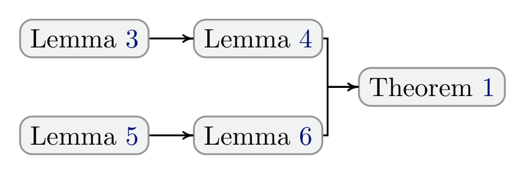
증명은 네 개의 보조정리 위에 세워집니다.
Lemma 3. MAG \(\mathcal{M}\)의 서로소인 세 정점 집합 \(\mathbf{A}, \mathbf{B}, \mathbf{C}\)에 대해, \(\mathbf{A}\)와 \(\mathbf{B}\)가 \(\mathcal{M}\)에서 \(\mathbf{C}\)에 의해 m-분리될 필요충분조건은 \(\big(\mathcal{M}[\mathrm{Ant}^{+}(\mathbf{A} \cup \mathbf{B} \cup \mathbf{C}, \mathcal{M})]\big)^a\)에서 \(\mathbf{C}\)에 의해 분리되는 것이다. (Richardson & Spirtes, 2002, Theorem 3.18의 직접적 귀결)
Lemma 4. MAG \(\mathcal{M}\)의 정점 부분집합 \(\mathbf{S}\)와 그 안의 두 정점 \(X, Y\)에 대해, \(X\)와 \(Y\)가 \(\mathbf{S} \setminus \{X, Y\}\)의 어떤 부분집합에 의해 m-분리될 필요충분조건은 \(\mathrm{Ant}(\{X, Y\}, \mathcal{M}) \cap \mathbf{S}\)에 의해 m-분리되는 것이다.
Lemma 5. \(\pi\)가 MAG \(\mathcal{M}\)에서 \(\mathbf{Z}\) 하에 \(X\)와 \(Y\)를 m-연결하는 경로라면, \(\pi\) 위의 모든 정점은 \(\mathrm{Ant}^{+}(\{X, Y\} \cup \mathbf{Z}, \mathcal{M})\)에 속한다. (Richardson & Spirtes, 2002, Lemma 3.13의 직접적 귀결)
Lemma 6. 인접하지 않은 두 정점 \(X, Y\)를 잇는 경로 \(\pi\)가 \(\mathrm{Ant}^{+}(\{X, Y\}, \mathcal{M})\)에 완전히 포함되지 않으면, \(\pi\)는 \(\mathrm{Ant}(\{X, Y\}, \mathcal{M})\)의 임의의 부분집합에 의해 m-분리된다.
Lemma 6의 증명 아이디어를 잠깐 짚어 보겠습니다. \(\pi\)가 \(\mathrm{Ant}^{+}(\{X, Y\}, \mathcal{M})\)에 완전히 포함되지 않으므로 \(V \notin \mathrm{Ant}^{+}(\{X, Y\}, \mathcal{M})\)인 정점 \(V\)가 \(\pi\) 위에 존재합니다. 한편 MAG에서 \(\mathrm{Ant}(\cdot, \mathcal{M})\)는 선행 관계에 대해 닫혀 있으므로 \(\mathrm{Ant}(\mathrm{Ant}(\{X, Y\}, \mathcal{M}), \mathcal{M}) = \mathrm{Ant}(\{X, Y\}, \mathcal{M})\)이고, \(\mathbf{Z} \subseteq \mathrm{Ant}(\{X, Y\}, \mathcal{M})\)이면 단조성에 의해
\[ \mathrm{Ant}^{+}(\{X, Y\} \cup \mathbf{Z}, \mathcal{M}) = \mathrm{Ant}^{+}(\{X, Y\}, \mathcal{M}) \]
가 됩니다. 따라서 \(V \notin \mathrm{Ant}^{+}(\{X, Y\} \cup \mathbf{Z}, \mathcal{M})\)이고, Lemma 5에 의해 \(\pi\)는 \(\mathbf{Z}\) 하에서 \(X\)와 \(Y\)를 m-연결할 수 없습니다. \(\blacksquare\)
Theorem 1의 증명
(\(\Rightarrow\) 방향). \(X\)와 \(Y\)가 \(\mathbf{O}\)의 어떤 부분집합에 의해 m-분리된다고 합시다. Lemma 4에 의해 이들은
\[ \mathbf{Z} = \mathrm{Ant}(\{X, Y\}, \mathcal{M}) \cap \mathbf{O} \]
에 의해 m-분리됩니다. 이제
\[ \mathbf{S} = \mathrm{Ant}(\{X, Y\}, \mathcal{M}) \cap \mathrm{MB}(X), \qquad \mathbf{B} = \mathbf{O} \setminus \mathrm{MB}^{+}(X) \]
로 두고 \(\mathbf{S}\)가 \(X\)와 \(Y\)를 m-분리함을 보입니다. 임의의 경로 \(\pi\)에 대해,
- \(\pi\)가 \(\mathrm{Ant}^{+}(\{X, Y\}, \mathcal{M})\)에 완전히 포함되지 않으면 Lemma 6에 의해 \(\mathbf{S}\)를 포함한 임의의 부분집합이 \(\pi\)를 차단합니다.
- \(\pi\)의 모든 정점이 \(\mathrm{Ant}^{+}(\{X, Y\}, \mathcal{M})\)에 있다고 합시다. \(\pi\)가 \(\mathbf{S}\)에 의해 차단되지 않는다고 가정하면, \(\mathbf{Z}\)가 차단하고 \(\mathbf{S} \subseteq \mathbf{Z}\)이므로 \(\pi \cap (\mathbf{Z} \setminus \mathbf{S}) \subseteq \mathbf{B}\)에 속하는 정점이 적어도 하나 존재합니다. 그중 \(X\)에 가장 가까운 정점을 \(V\)라 하면 부분경로 \(\pi(X, V)\) 역시 \(\mathbf{S}\)로 차단되지 않습니다. \(\pi(X, V)\)의 비-끝점 정점은 모두 \(\mathbf{B}\) 밖에 있고 \(\mathrm{Ant}(\{X, Y\}, \mathcal{M})\) 안에 있으므로 전부 \(\mathbf{S}\)에 속합니다. 따라서 \(\pi(X, V)\)는 \(\mathbf{S}\) 하에서, 나아가 \(\mathrm{MB}(X) \cup \mathbf{S} = \mathrm{MB}(X)\) 하에서 \(X\)와 \(V\)를 m-연결합니다. 그런데 MB 성질에 의해 임의의 \(B \in \mathbf{B}\)에 대해 \(X \perp\!\!\!\perp B \mid \mathrm{MB}(X)\)가 성립하므로 이는 모순입니다.
따라서 \(\pi\)는 \(\mathbf{S}\)에 의해 m-분리되며, \(\mathrm{MB}(X)\) 안에 \(X\)와 \(Y\)를 m-분리하는 부분집합이 존재합니다.
(\(\Leftarrow\) 방향). \(\mathrm{MB}(X) \subseteq \mathbf{O}\)이므로 자명합니다. \(\blacksquare\)
C.3 Theorem 2와 Theorem 3의 증명
증명은 MAG·PAG의 엣지 마크가 갖는 인과적 의미와 화살표-충돌자 경로 개념 위에 세워집니다.
Lemma 7. \(\mathcal{D}\)를 \(\mathbf{V} = \mathbf{O} \cup \mathbf{L} \cup \mathbf{S}\) 위의 DAG, \(\mathcal{M}\)을 \(\mathcal{D}\)를 \(\mathbf{O}\) 위에서 인과적으로 나타내는 MAG, \(\mathcal{M}'\)을 임의의 부분집합 \(\mathbf{O}' \subset \mathbf{O}\) 위에서 인과적으로 나타내는 MAG라 하자. 그러면 \(\mathcal{M}'\)의 모든 엣지 마크는 \(\mathcal{M}\)에서와 동일한 인과 정보를 부호화한다. 즉 인접한 \(X, Y \in \mathbf{O}'\)에 대해,
- (1) \(\mathcal{M}'\)에서 \(X -\!\!\ast\, Y\)이면 \(X\)는 \(\mathcal{D}\)에서 \(Y \cup \mathbf{S}\)의 조상이며 따라서 \(\mathcal{M}\)에서도 그렇다.
- (2) \(\mathcal{M}'\)에서 \(X \leftarrow\!\!\ast\, Y\)이면 \(X\)는 \(Y \cup \mathbf{S}\)의 조상이 아니다.
Lemma 7이 성립하는 이유는 간명합니다. MAG의 엣지 마크는 인과적 해석을 갖습니다(Zhang, 2008) — 정점 \(X\) 쪽의 꼬리는 \(X\)가 인접 정점 또는 선택 변수의 조상임을, 화살촉은 조상이 아님을 뜻합니다. 그런데 부분집합 \(\mathbf{O}'\) 위에서 \(\mathcal{M}'\)을 구성하는 것은 나머지 변수 \(\mathbf{O} \setminus \mathbf{O}'\)를 잠재변수로 취급하는 것과 같고, MAG의 정의상 엣지 마크의 인과 의미론은 이런 사영(projection) 하에서 보존됩니다.
Corollary 2. \(\mathcal{M}\)을 \(\mathbf{O}\) 위의 MAG, \(\mathcal{L}_{\mathbf{O}'}\)을 임의의 \(\mathbf{O}' \subset \mathbf{O}\) 위의 국소 PAG라 하자. 그러면 \(\mathcal{L}_{\mathbf{O}'}\)의 모든 비-원(non-circle) 엣지 마크는 \(\mathcal{M}\)에서와 동일한 인과 정보를 부호화한다.
혼합 그래프에서 경로 \(\pi = \langle V_0, \dots, V_n \rangle\)이 \(V_0\)에서 \(V_n\)으로의 화살표-충돌자 경로라 함은, 모든 비-끝점 정점이 \(\pi\) 위의 충돌자이고 \(V_0\)과 \(V_1\) 사이의 엣지가 \(V_0\) 쪽으로 들어오는 경우, 즉 \(V_0 \leftrightarrow V_1 \cdots \leftarrow\!\!\ast\, V_n\)인 경우를 말한다. \(n = 1\)이면 \(\pi\)는 단순히 \(V_0 \leftarrow\!\!\ast\, V_1\)이다.
Lemma 8. \(\mathcal{M}\)을 \(\mathbf{O}\) 위의 MAG, \(V_1, V_2\)를 \(V_1 \notin \mathrm{Ant}(V_2, \mathcal{M})\)인 인접하지 않은 두 정점이라 하자.
\[\mathbf{Z} = \{\mathrm{ArrColl}(V_1, \mathcal{M}) \cap \mathrm{Ant}(\{V_1, V_2\}, \mathcal{M})\} \setminus \{V_1, V_2\}\]
라 두면(\(\mathrm{ArrColl}(V_1, \mathcal{M})\)은 \(\mathcal{M}\)에서 화살표-충돌자 경로를 통해 \(V_1\)으로부터 도달 가능한 정점 집합), \(\mathbf{Z}\)는 \(\mathcal{M}\)에서 \(V_1\)과 \(V_2\)를 m-분리한다.
Lemma 8의 증명은 \(V_1\)과 \(V_2\) 사이의 임의 경로 \(\pi\)를 첫 엣지 형태에 따라 \(V_1 \leftarrow A_1 \cdots\), \(V_1 \leftrightarrow A_1 \cdots\), \(V_1 -\!\!\ast\, A_1 \cdots\)의 세 경우로 나눈 뒤, 각 경우에서 \(\mathbf{Z}\)에 속하는 비충돌자를 찾거나 \(\mathrm{Ant}^{+}(\mathbf{Z}, \mathcal{M})\) 밖에 있는 충돌자를 찾아 차단을 보이는 방식으로 진행됩니다.
Theorem 2의 증명 개요
(\(\Rightarrow\) 방향). \(\mathcal{L}_X\)에서 비피복 충돌자 경로 \(X \ast\!\!\to V_1 \leftrightarrow \cdots \leftarrow\!\!\ast\, V_i\) (\(i \ge 2\))가 식별되었다고 합시다. 첫 삼중항 \(\langle X, V_1, V_2 \rangle\)에 대해 \(\mathrm{MB}^{+}(X)\) 위에서 다음이 성립합니다.
- 모든 \(\mathbf{S} \subset \mathrm{MB}(X)\)에 대해 \(X \not\perp\!\!\!\perp V_1 \mid \mathbf{S}\)
- \(X \perp\!\!\!\perp V_2 \mid \mathrm{Sepset}(X, V_2)\)인 \(\mathrm{Sepset}(X, V_2) \subset \mathrm{MB}(X)\)가 존재
- 모든 \(\mathbf{S} \subset \mathrm{MB}^{+}(X)\)에 대해 \(V_1 \not\perp\!\!\!\perp V_2 \mid \mathbf{S}\)
- \(V_1 \notin \mathrm{Sepset}(X, V_2)\)
Theorem 1에 의해 (1)은 \(\mathcal{L}_X\)의 \(X\)–\(V_1\) 엣지가 \(\mathcal{P}\)와 일치함을, (2)는 양쪽 모두에서 \(X\)–\(V_2\) 엣지가 없음을 보장합니다. 이제 \(\mathcal{P}\)에서 \(X\)–\(V_1\) 엣지가 \(X \ast\!\!-\, V_1\)이라고 가정하면 (3), (4)와 결합하여 모든 \(\mathbf{S} \subseteq \mathrm{MB}(X)\)에 대해 \(X \not\perp\!\!\!\perp V_2 \mid \mathbf{S}\)가 되어 (2)에 모순입니다. 따라서 \(\mathcal{P}\)에서도 \(X \ast\!\!\to V_1\)이어야 합니다.
다음으로 \(\mathcal{L}_X\)의 \(V_1\)–\(V_2\) 엣지가 가짜라고 — 즉 밑바탕 \(\mathcal{M}\)에는 직접 엣지가 없고 활성 경로만 있다고 — 가정합니다. \(X \ast\!\!\to V_1\)이므로 \(\mathrm{ArrColl}(V_1, \mathcal{M}) \subset \mathrm{MB}^{+}(X)\)이고, 따라서 Lemma 8의 \(\mathbf{Z}\)도 \(\mathrm{MB}^{+}(X)\) 안에 있습니다. \(\mathcal{L}_X\)에서 \(V_1 \leftarrow\!\!\ast\, V_2\)이므로 Corollary 2에 의해 \(V_1\)은 \(\mathcal{M}\)에서 \(V_2\)의 조상이 아니고, Lemma 8에 의해 \(\mathbf{Z} \subset \mathrm{MB}^{+}(X)\)가 \(V_1\)과 \(V_2\)를 m-분리합니다 — 즉 \(V_1 \leftarrow\!\!\ast\, V_2\) 엣지는 \(\mathcal{P}\)와 일치합니다. 같은 논증이 두 번째 삼중항 \(\langle V_1, V_2, V_3 \rangle\) 이후로 반복적으로 확장됩니다.
(\(\Leftarrow\) 방향). 역으로 참 PAG에 비피복 충돌자 경로 \(\pi\)가 있다면, \(\pi\) 위의 인접 정점 쌍은 \(\mathbf{O}\)의 어떤 부분집합으로도 m-분리되지 않으므로 \(\mathrm{MB}(X)\)의 부분집합으로도 분리되지 않습니다. 삼중항의 위치(\(j = 0\), \(0 < j < i-2\), \(j = i-2\))에 따라 Theorem 1 또는 Lemma 8을 적용하면, 각 경우에 \(V_j\)와 \(V_{j+2}\)를 m-분리하면서 \(V_{j+1}\)을 포함하지 않는 집합 \(\mathbf{Z} \subset \mathrm{MB}(X)\)가 존재함을 보일 수 있습니다. 따라서 \(\pi\) 위의 모든 비차폐 삼중항이 \(\mathcal{L}_X\)에서 충돌자로 식별되고, 비피복 충돌자 경로 \(\pi\)가 올바르게 복원됩니다. \(\blacksquare\)
Theorem 3의 증명
\(\mathcal{L}_X\)에서 비차폐 충돌자 \(V_1 \ast\!\!\to X \leftarrow\!\!\ast\, V_2\)가 식별되었다고 합시다.
- Theorem 1에 의해 \(X\)–\(V_1\), \(X\)–\(V_2\) 직접 엣지의 존재가 \(\mathcal{P}\)와 일치합니다.
- 마찬가지로 \(\mathcal{L}_X\)에서 \(V_1\)–\(V_2\) 직접 엣지가 없다는 사실도 \(\mathcal{P}\)와 일치합니다.
- 나아가 \(\mathrm{Sepset}(V_1, V_2) \subset \mathrm{MB}^{+}(X)\)가 존재하면서 \(X \notin \mathrm{Sepset}(V_1, V_2)\)이므로, \(\mathcal{P}\)의 삼중항 \(\langle V_1, X, V_2 \rangle\)에서 \(X\)는 반드시 충돌자입니다(Corollary 2로부터도 같은 결론을 얻습니다). \(\blacksquare\)
C.4 Theorem 4의 증명
증명은 다음의 기초적 관찰에 의존합니다 — 유지 집합(retained set)에 대해 무관한 잎(leaf) 변수를 제거해도 유지 변수들 위의 결합분포는 바뀌지 않는다.
Lemma 9. \(\mathcal{M}\)을 DAG \(\mathcal{D}\)가 유도한 \(\mathbf{O}\) 위의 MAG, \(\mathbf{X} \subseteq \mathbf{O}\)를 유지할 변수 집합이라 하자. \(\mathbf{Y} \subseteq \mathbf{O} \setminus \mathbf{X}\)를 어떤 순서 \(Y_1, \dots, Y_m\)으로 제거할 수 있어 각 단계에서 \(Y_k\)가 그 시점의 유지 변수들에 상대적인 잎이라면, \(\mathbf{Y}\)를 제거해도 \(\mathbf{X}\) 위의 주변분포는 바뀌지 않는다.
\[P_{\mathcal{M}}(\mathbf{X}) = P_{\mathcal{M} \setminus \mathbf{Y}}(\mathbf{X})\]
Lemma 9의 유도를 단계별로 풀어 보겠습니다. 변수 하나를 제거하는 경우만 보이면 충분합니다. \(Y \in \mathbf{O} \setminus \mathbf{X}\)를 제거할 변수, \(\mathbf{R} = \mathbf{O} \setminus \{Y\}\)라 둡니다.
1단계 (가정의 활용). \(Y\)가 현재 유지 변수들에 상대적인 잎이므로, 대응하는 밑바탕 인과 구조 표현에서 \(Y\)는 \(\mathbf{R}\)의 어떤 변수의 선행 집합에도 등장하지 않습니다. 따라서 \(Y\)에 결부된 인수(factor)를 나머지 인수들로부터 분리할 수 있습니다.
2단계 (주변화의 전개). 정의에 따라
\[ P_{\mathcal{M}}(\mathbf{X}) = \sum_{\mathbf{O} \setminus \mathbf{X}} P_{\mathcal{M}}(\mathbf{O}) = \sum_{\mathbf{R} \setminus \mathbf{X}} \sum_{y} P_{\mathcal{M}}(\mathbf{R}, y) \]
3단계 (\(Y\) 인수의 소거). 1단계의 분리 가능성에 의해 안쪽 합 \(\sum_y P_{\mathcal{M}}(\mathbf{R}, y)\)는 \(Y\)의 국소 인수만 제거하고 나머지는 그대로 두므로 \(P_{\mathcal{M} \setminus Y}(\mathbf{R})\)와 같습니다.
4단계 (최종식).
\[ P_{\mathcal{M}}(\mathbf{X}) = \sum_{\mathbf{R} \setminus \mathbf{X}} P_{\mathcal{M} \setminus Y}(\mathbf{R}) = P_{\mathcal{M} \setminus Y}(\mathbf{X}) \tag{2} \]
같은 논증을 \(Y_1, \dots, Y_m\)에 순차적으로 적용하면 \(P_{\mathcal{M}}(\mathbf{X}) = P_{\mathcal{M} \setminus Y_1}(\mathbf{X}) = \cdots = P_{\mathcal{M} \setminus \mathbf{Y}}(\mathbf{X})\)를 얻습니다. \(\blacksquare\)
각 정지 규칙의 충분성
순차 절차 내내 LoCaLS는 §4.2가 보장하는 인접성·끝점 마크만 삽입하고(Corollaries 1, 2와 Theorems 2, 3), OrientPAG는 건전한 방향 규칙만 적용합니다. 따라서 \(\hat{\mathcal{P}}\)에 기록된 모든 구조적 마크는 전역 PAG에 대해 건전합니다.
| 규칙 | 충분성의 근거 |
|---|---|
| R1 | \(T\)에 인접한 모든 엣지 마크가 결정되었다면 관심 있는 목표 특화 정보는 이미 고정되었다. \(\hat{\mathcal{P}}\)의 마크들이 모두 건전하므로 이후의 어떤 국소 학습도 그것을 정당하게 바꿀 수 없다. |
| R2 | Waitlist가 비었다면 현재 \(T\)-연결 활성 영역에 국소 학습 대상으로 선택된 미처리 정점이 없다는 뜻이므로, 현재 \(T\) 주변 구조가 전역 인과 발견의 목표 특화 구조와 동치다. |
| R3 | 남은 미처리 변수 집합 \(\mathbf{Y}\)는 목표 특화 구조에 영향을 주지 않는 선행 영역 밖에 놓인다. \(T\)와 현재 관련된 처리 완료 정점들로 이루어진 유지 영역에 상대적으로 \(\mathbf{Y}\)는 제거 가능한 상대적 잎으로 취급할 수 있고, Lemma 9에 의해 이를 주변화해도 유지 영역 위의 분포는 변하지 않는다. 따라서 \(\mathbf{Y}\) 주변의 추가 국소 학습은 \(T\)에 인접한 인접성·끝점 마크에 관해 추가적인 조건부 독립 제약이나 방향 정보를 공급할 수 없다. |
C.5 Theorem 5의 증명
LoCaLS의 다음 불변식(invariant)에서 출발합니다 — 각 반복 이후, \(\hat{\mathcal{P}}\)에 삽입된 모든 인접성과 끝점 마크는 \(\mathcal{P}\)의 것과 일치한다.
- 처리된 각 변수 \(X\)에 대해, Corollaries 1과 2가 \(\mathcal{L}_X\)에서 \(X\)에 인접한 엣지들이 전역 PAG의 것과 일치함을 보장합니다.
- LoCaLS는 Theorems 2와 3이 정당화하는 국소 방향 정보만 보존하며, 이어지는
OrientPAG호출은 건전한 PAG 방향 규칙만 적용합니다. - 따라서 \(\hat{\mathcal{P}}\)에 추가되는 어떤 인접성이나 끝점 마크도 전역 PAG와 모순되지 않습니다.
건전성: 목표 변수 \(T\)가 가장 먼저 처리되므로 \(T\)에 인접한 인접성은 \(\mathcal{L}_T\)로부터 정확히 복원됩니다. 이후 반복이 \(T\)에 인접한 끝점 마크를 더 결정할 수 있지만, 위 불변식에 의해 그 모든 방향 결정은 \(\mathcal{P}\)와 일치합니다.
완전성: 남은 것은 알고리즘이 목표 특화 정보를 전부 복원하기 전에 멈추지 않음을 보이는 일이며, 이는 Theorem 4가 담당합니다. R1이면 \(T\)에 인접한 모든 끝점 마크가 결정된 것이고, R2면 추가 국소 학습 대상이 남아 있지 않으며, R3면 미처리 변수에서 \(T\)로 가는 모든 경로가 비-잠재적-선행 마크로 차단되어 있어 어떤 잔여 변수도 \(T\) 주변 구조를 더 해결할 정보를 줄 수 없습니다.
따라서 종료 시점에 \(\hat{\mathcal{P}}\) 안의 \(T\) 주변 국소 구조는 전역 PAG \(\mathcal{P}\)로부터 얻어질 인접성과 식별 가능한 끝점 마크를 정확히 담고 있습니다. \(\blacksquare\)
부록 D. LoCaLS의 추가 기술적 세부 (Appendix D. Additional Technical Details for LoCaLS)
D.1 방향 결정 규칙 (Orientation Rules)
\(\mathrm{Sepsets}\)는 국소 학습 과정에서 식별된 모든 조건부 독립 관계의 모음입니다. \(\mathrm{Sepsets}\)에 기록된 분리집합 \(\mathrm{Sepset}(X, Y)\)는 학습된 그래프에서 \(X\)와 \(Y\) 사이에 엣지가 없음을 함의합니다. (Zhang, 2008)이 제시한 건전하고 완전한 PAG 방향 결정 규칙을 그대로 사용합니다.
Algorithm 3: OrientPAG
────────────────────────────────────────────────────────────────────
input : PAG P, 분리집합 모음 Sepsets
output: 방향이 결정된 PAG P
1: P 를 현재 골격과 기존 엣지 마크로 초기화
2: repeat ▷ 전제가 만족되는 규칙을 계속 적용
3: Rule 1. X*→Y ∘−* Z 이고 Sepset(X,Z) ∈ Sepsets 이며 Y ∈ Sepset(X,Z) 이면
4: X*→Y → Z 로 방향 결정
5: Rule 2. X→Y*→Z 또는 X*→Y→Z 이고 X *−∘ Z 이면 X*→Z 로 방향 결정
6: Rule 3. X*→Y←*Z, X *−∘ W ∘−* Z, W *−∘ Y, Sepset(X,Z) ∈ Sepsets,
7: W ∈ Sepset(X,Z) 이면 W *−∘ Y 를 W*→Y 로 방향 결정
8: Rule 4. Y 에 대한 W 와 Z 사이의 판별 경로(discriminating path)
9: π = ⟨W, ..., X, Y, Z⟩ 가 존재하고 Y ∘−* Z 이며 Sepset(W,Z) ∈ Sepsets 이면
10: Y ∈ Sepset(W,Z) 이면 Y ∘−* Z 를 Y → Z 로,
11: 아니면 삼중항 ⟨X, Y, Z⟩ 를 X ↔ Y ↔ Z 로 방향 결정
12: Rule 5. 남은 엣지 X ∘−∘ Y 에 대해, 비피복 원 경로(uncovered circle path)
13: p = ⟨X, Z, ..., W, Y⟩ 가 존재하고 Y ∈ Sepset(X,W), X ∈ Sepset(Y,Z) 이면
14: X ∘−∘ Y 와 p 위의 모든 엣지를 무향 엣지로 방향 결정
15: Rule 6. X − Y ∘−* Z 이면 Y ∘−* Z 를 Y −* Z 로 방향 결정
16: Rule 7. X −∘ Y ∘−* Z 이고 Y ∈ Sepset(X,Z) 이면 Y ∘−* Z 를 Y −* Z 로 방향 결정
17: Rule 8. X → Y → Z 또는 X −∘ Y → Z 이고 X∘→Z 이면 X∘→Z 를 X → Z 로 방향 결정
18: Rule 9. X∘→Z 이고 p = ⟨X, Y, W, ..., Z⟩ 가 X 에서 Z 로 가는 비피복
19: 잠재 유향 경로이며 X ∈ Sepset(Z,Y) 이면 X∘→Z 를 X → Z 로 방향 결정
20: Rule 10. X∘→Z, Y→Z←W 이고 π₁ 이 X 에서 Y 로, π₂ 가 X 에서 W 로 가는 비피복
21: 잠재 유향 경로일 때, π₁·π₂ 위에서 X 에 인접한 정점을 각각 U, V 라 하자.
22: U ≠ V, Sepset(U,V) ∈ Sepsets, X ∈ Sepset(U,V) 이면
23: X∘→Z 를 X → Z 로 방향 결정
24: until P 의 어떤 엣지 마크도 더 이상 결정할 수 없을 때까지
25: return P
────────────────────────────────────────────────────────────────────Zhang (2008)의 10개 규칙 중 Rule 5, 6, 7이 무향 엣지(\(-\))를 만들거나 전파하는 규칙입니다. 잠재변수만 다루는 설정(선택 편향 없음)에서는 MAG에 무향 엣지가 아예 나타나지 않으므로 이 세 규칙이 불필요하며, 실제로 잠재변수 전용 알고리즘들은 이 규칙을 생략합니다. LoCaLS가 이 완전한 규칙 집합을 그대로 호출한다는 사실이 곧 선택 편향을 정면으로 다룬다는 선언입니다.
D.2 대기열 갱신 (Update Waitlist)
Algorithm 4: UpdateWaitlist
────────────────────────────────────────────────────────────────────
input : 목표 변수 T, 현재 그래프 P̂, 처리 완료 집합 Donelist
output: 갱신된 Waitlist
1: Waitlist ← ∅ 으로 초기화
2: for each P̂ 안의 변수 V do
3: if V 가 P̂ 에서 T 로 가는 잠재적 선행 경로를 가지면 then
4: V 를 Waitlist 에 추가
5: end if
6: end for
7: Donelist 의 모든 변수를 Waitlist 에서 제거
8: return Waitlist
────────────────────────────────────────────────────────────────────Algorithm 4의 선별적 갱신은 완전성 논증을 바꾸지 않습니다. 이는 거친 갱신의 정련(refinement)으로, \(T\)와 연결된 미처리 정점을 전부 유지하는 대신 현재 그래프 \(\hat{\mathcal{P}}\)에서 여전히 \(T\)로 가는 잠재적 선행 경로를 갖는 정점만 남깁니다. 이 규칙이 버리는 정점들은 정확히 R3의 구조적 잉여성 조건이 덮는 정점들이며, Theorem 4에 의해 그들의 국소 구조를 배워도 \(T\) 주변 구조에 영향을 줄 수 없습니다. 따라서 거친 갱신을 Algorithm 4로 대체해도 완전성이 보존되고, R3는 대기열 갱신에 암묵적으로 흡수되어 실무에서는 R1과 R2만 명시적으로 검사하면 됩니다.
부록 E. 보충 예시 (Appendix E. Supplementary Examples)
거친 대기열 갱신에서는 R3로 종료되지만, UpdateWaitlist를 쓰면 대신 R2로 종료되는 학습 과정을 보여 주는 예시입니다.
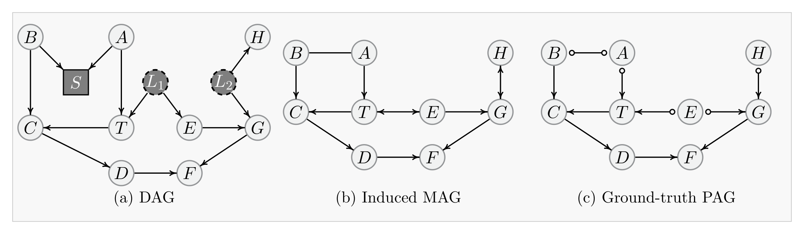
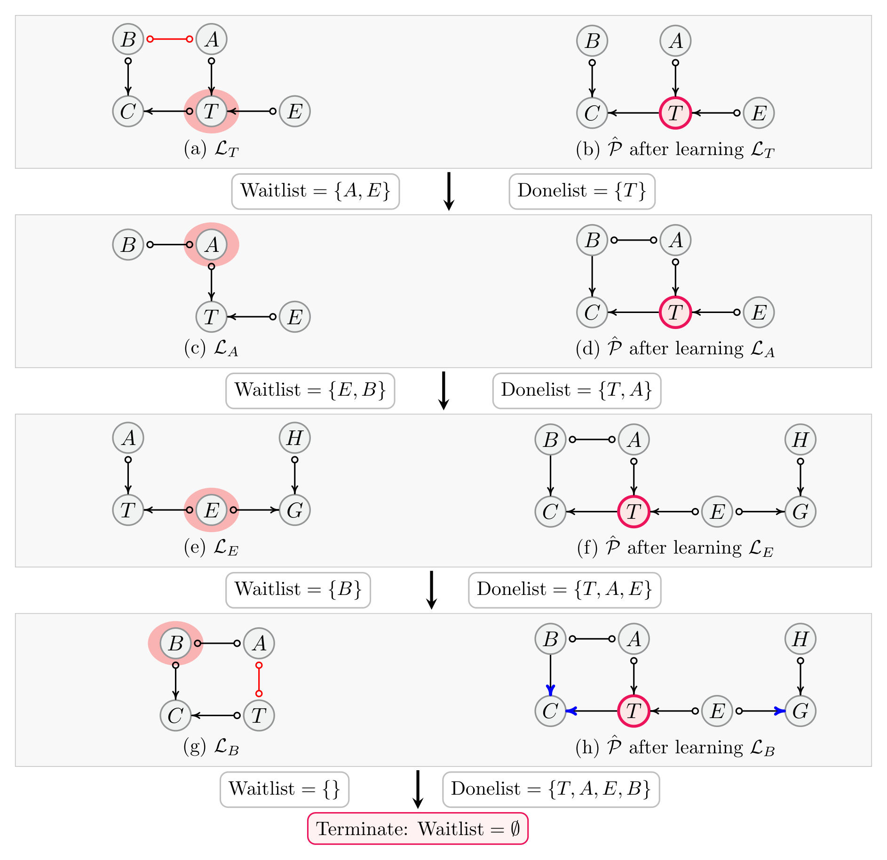
UpdateWaitlist가 빈 대기열을 반환하고 절차는 R2로 종료됩니다. 이 그림의 핵심 메시지는 선별적 대기열 갱신이 R3의 구조적 잉여성 판정을 자동으로 수행한다는 점입니다 — 거친 갱신이었다면 같은 잉여성이 R3로 탐지되었을 상황입니다.Example 4. Fig. 11의 인과 그래프들을 놓고 오라클 CI 검정을 가정합니다. \(T\)가 목표 변수이며 \(\mathrm{Waitlist} = \{T\}\), \(\mathrm{Donelist} = \emptyset\), \(\hat{\mathcal{P}} = \emptyset\)에서 시작합니다.
- \(T\) 처리. \(\mathrm{MB}^{+}(T) = \{A, B, C, E, T\}\)를 식별하고 Fig. 12(a)의 \(\mathcal{L}_T\)를 학습합니다. 전역 일치가 보장되는 정보만 편입하고 붉은 엣지는 폐기하면 Fig. 12(b)를 얻습니다. \(A\)와 \(E\)가 \(T\)로 가는 잠재적 선행 경로를 가지므로 \(\mathrm{Donelist} = \{T\}\), \(\mathrm{Waitlist} = \{A, E\}\).
- \(A\) 처리. \(\mathrm{MB}^{+}(A) = \{A, B, E, T\}\)를 식별하고 Fig. 12(c)의 \(\mathcal{L}_A\)를 학습합니다. 보장된 정보 보존과 방향 규칙 적용 후 Fig. 12(d)를 얻고, \(\mathrm{Donelist} = \{T, A\}\), \(\mathrm{Waitlist} = \{E, B\}\).
- \(E\) 처리. \(\mathrm{MB}^{+}(E) = \{A, E, G, H, T\}\)를 식별하고 Fig. 12(e)의 \(\mathcal{L}_E\)를 학습하여 Fig. 12(f)로 갱신합니다. 이제 \(B\)만 대기열에 남습니다. \(\mathrm{Donelist} = \{T, A, E\}\), \(\mathrm{Waitlist} = \{B\}\).
- \(B\) 처리. \(\mathrm{MB}^{+}(B) = \{A, B, C, T\}\)를 식별하고 Fig. 12(g)의 \(\mathcal{L}_B\)를 학습하면 \(\hat{\mathcal{P}}\)는 Fig. 12(h)가 됩니다. 이 시점에서 남은 미처리 변수 중 \(T\)로 가는 잠재적 선행 경로를 갖는 것이 하나도 없으므로
UpdateWaitlist는 \(\mathrm{Waitlist} = \emptyset\)을 반환하고, 알고리즘은 R2로 종료됩니다. 거친 갱신을 썼다면 동일한 구조적 잉여성이 R3로 탐지되었을 것입니다.
부록 F. 보충 실험 (Appendix F. Supplementary Experiments)
F.1 비교 방법에 대한 추가 세부
모든 비교 방법에 대해 공식 또는 공개 구현이 제공하는 기본 하이퍼파라미터를 사용하며, CI 검정 기반 방법은 모두 \(\alpha = 0.01\)로 통일합니다. 각 방법의 학습 범위·지원 가정·코드 출처는 §2의 Table III에 정리한 대로입니다.
F.2 평가 지표의 형식적 정의
참 PAG를 \(\mathcal{P}\), 학습된 PAG를 \(\hat{\mathcal{P}}\)라 하고, 목표 변수 \(T\)에 대해 대응하는 PAG 행렬의 목표 행과 목표 열을 평가하되 대각 성분 \((T, T)\)는 제외합니다. 형식적으로
\[ \Omega_T = \{(T, V) : V \in \mathbf{O} \setminus \{T\}\} \cup \{(V, T) : V \in \mathbf{O} \setminus \{T\}\} \]
로 두면, \(\Omega_T\)는 \(T\)에 인접한 엣지들의 끝점 마크에 대응하는 모든 행렬 성분을 담습니다. 0이 아닌 성분은 PAG 끝점 마크를 부호화하고, 0인 성분은 엣지의 부재를 뜻합니다.
Mark-Precision · Mark-Recall · Mark-F1. 예측된 마크는 0이 아니면서 참 마크와 정확히 일치할 때에만 참 양성으로 셉니다.
\[ \mathrm{TP}_{\text{mark}} = \sum_{(i,j) \in \Omega_T} \mathbb{I}\big[\hat{\mathcal{P}}(i,j) \ne 0 \ \wedge\ \hat{\mathcal{P}}(i,j) = \mathcal{P}(i,j)\big] \]
\[ \mathrm{Mark\text{-}Precision} = \frac{\mathrm{TP}_{\text{mark}}}{\sum_{(i,j) \in \Omega_T} \mathbb{I}[\hat{\mathcal{P}}(i,j) \ne 0]}, \qquad \mathrm{Mark\text{-}Recall} = \frac{\mathrm{TP}_{\text{mark}}}{\sum_{(i,j) \in \Omega_T} \mathbb{I}[\mathcal{P}(i,j) \ne 0]} \]
\[ \mathrm{Mark\text{-}F1} = 2 \cdot \frac{\mathrm{Mark\text{-}Precision} \cdot \mathrm{Mark\text{-}Recall}}{\mathrm{Mark\text{-}Precision} + \mathrm{Mark\text{-}Recall}} \]
어떤 지표의 분모가 0이면 그 점수는 0으로 둡니다.
Local-SHD. 구조적 해밍 거리(SHD)의 목표 특화 버전입니다.
\[ \mathrm{Local\text{-}SHD} = \sum_{(i,j) \in \Omega_T} \mathbb{I}\big[\hat{\mathcal{P}}(i,j) \ne \mathcal{P}(i,j)\big] \]
Local-SHD는 목표 변수와 연관된 불일치 PAG 성분의 개수를 세며, 누락 인접성·허위 인접성·잘못된 끝점 마크를 모두 포함합니다.
엣지 단위가 아니라 끝점 마크 단위로 세는 것이 PAG 평가의 핵심입니다. PAG에서 \(A \circ\!\!\to B\)와 \(A \to B\)는 인접성은 같지만 인과적 함의가 완전히 다릅니다 — 전자는 \(A\)가 \(B\)의 원인일 수도, 잠재 교란자를 공유할 수도 있다는 뜻이고, 후자는 \(A\)가 확정된 원인이라는 뜻입니다. 엣지 단위 평가는 이 차이를 지워 버리므로, 목표의 직접 원인과 직접 결과를 구분해 내는 것이 과제인 이 논문에서는 마크 단위 평가가 필수적입니다.
F.3–F.4 랜덤 구조에 대한 보충 결과
부록 F.3의 Table IV(§5.3에 옮겨 놓았습니다)는 차원을 변화시킨 실험에서 유도된 MAG들의 평균 차수가 2.05–2.16으로 유지됨을 보여, 이 실험이 밀도 변화가 아닌 변수 개수 확장성을 재는 것임을 확인합니다. Tables V–VI는 Figure 6에 대응하는 상세 실행 시간과 CI 검정 횟수를, 부록 F.4의 Tables VII–VIII는 Figure 7에 대응하는 수치를 제공합니다.
F.5 실세계 구조에 대한 보충 결과
Table IX(§5.5에 옮겨 놓았습니다)가 이 실험에 쓰인 인과 구조들을 요약합니다.
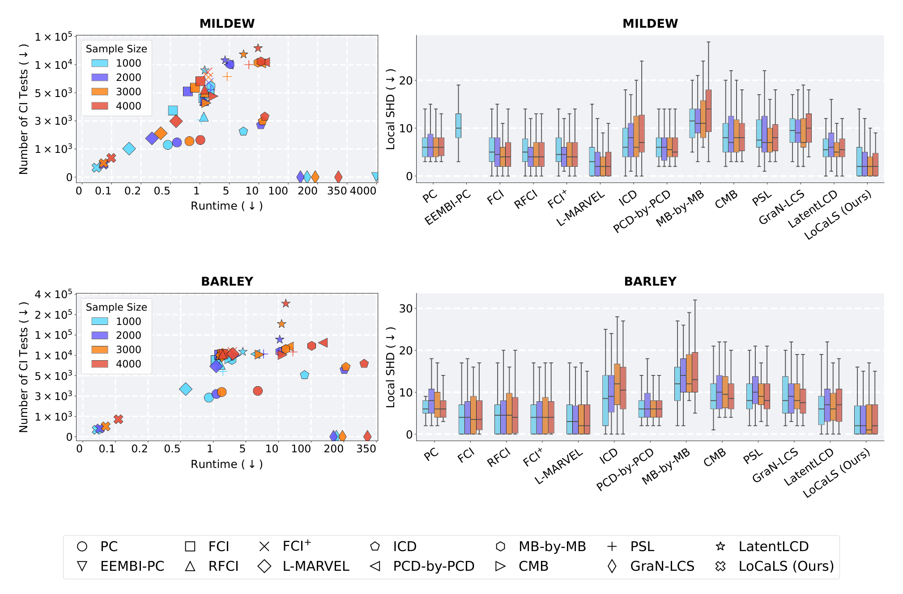
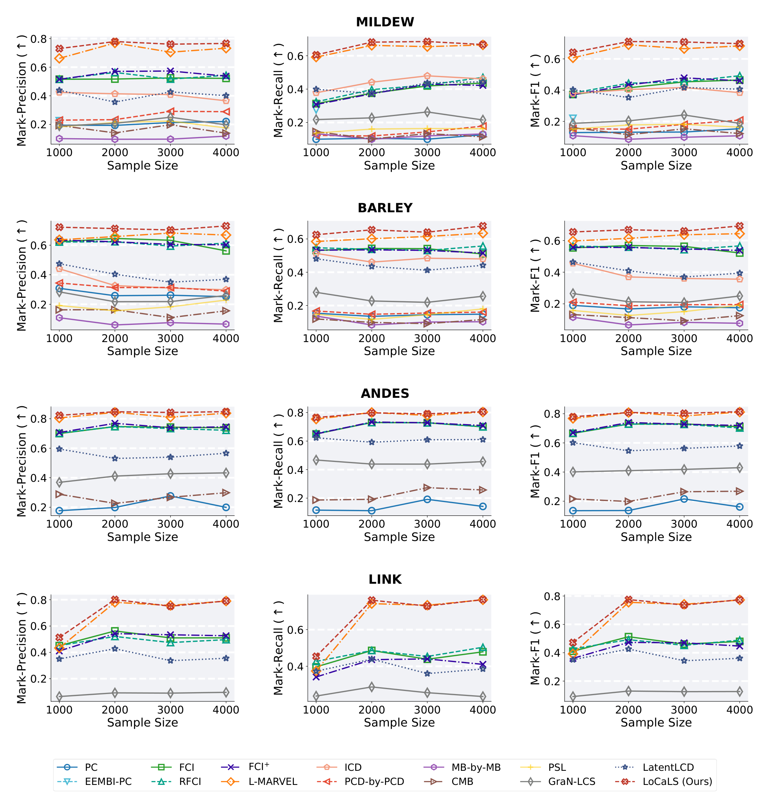
F.6 잠재변수 민감도에 대한 보충 결과
Table X에서 보듯 잠재 비율을 높여도 유도된 MAG의 평균 차수는 아주 조금만 증가합니다. 즉 이 실험에서 변화하는 주요 인자는 전반적인 그래프 밀도가 아니라 잠재 교란의 양 자체입니다. Table XI가 상세 실행 시간과 CI 검정 횟수를 제공합니다.
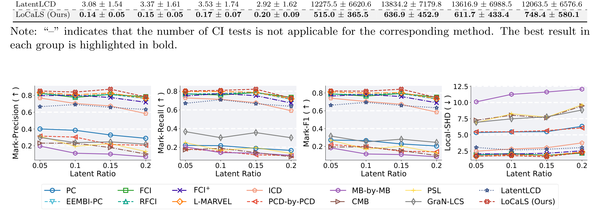
F.7 선택 변수 민감도에 대한 보충 결과
Table XII는 선택 비율이 달라져도 유도된 MAG의 평균 차수가 완만하게만 변함을 보여 주고, Table XIII가 상세 효율 수치를 제공합니다.
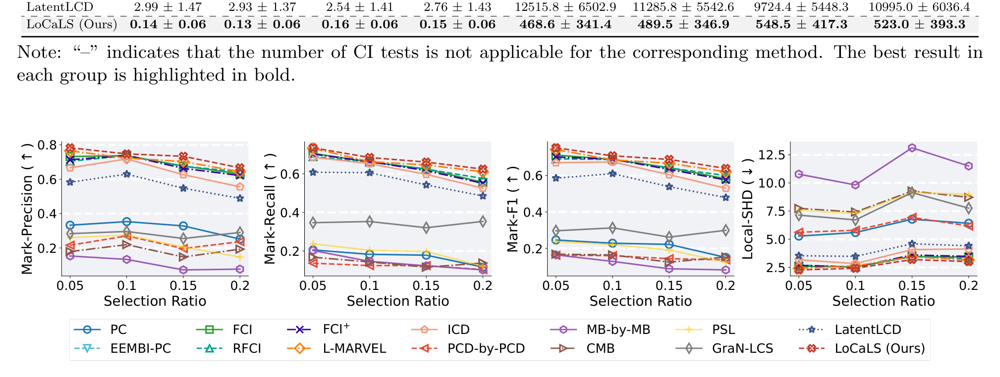
부록 G. 유전자 발현 응용의 보충 결과 (Appendix G. Supplementary Results for Gene Expression Applications)
G.1 애기장대 데이터에 대한 추가 결과
§6.1의 두 대표 예시를 보완하는 세 개의 목표 유전자에 대한 국소 구조입니다.
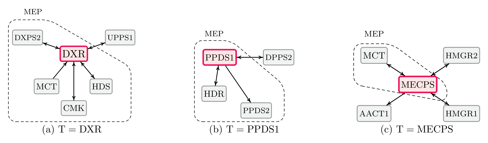
Wille et al. (2004, Figure 3)의 그래프 모형 및 알려진 이소프레노이드 경로 조직화와 비교하면 다음이 관찰됩니다.
- ① 경로 내부 연결: 목표 DXR에 대해 DXPS2, MCT, CMK, HDS가 이웃으로 복원되며 이는 Wille et al.의 핵심 MEP 사슬과 일치합니다. MEP 하류 목표 PPDS1에 대해서는 HDR, PPDS2, DPPS2가 복원되어 참조 그래프와 부합하고, MECPS의 이웃 MCT도 같은 MEP 모듈에 속해 참조 구조와 일치합니다.
- ② 경로 간 연결과 방향 패턴: DXR–UPPS1, PPDS1–DPPS2, MECPS–HMGR2, MECPS–AACT1은 Wille et al. (2004, Figure 3)의 구획 간 연결과 부합합니다. 색소체 MEP 경로, 세포질 MVA 경로, 미토콘드리아 유전자들이 완전히 분리되어 있지 않고 소수의 교량 유전자를 통해 상호작용한다는 견해를 뒷받침합니다. 복원된 엣지 대부분이 양방향이라는 점은 발현 데이터에 미측정 공통 조절자나 잠재 인자가 존재할 가능성을 시사합니다.
G.2 흑색종 데이터에 대한 추가 결과
B2M 외의 두 면역 관련 표적에 대한 결과입니다. 본문과 마찬가지로 L-MARVEL과 GraN-LCS만 기준선으로 보고합니다(나머지는 단일 실행이 2시간을 초과).
Table XIV: 목표 HLA-A (항원 제시 관련 유전자)
| 조건 | 알고리즘 | Runtime ↓ | #CI Tests ↓ | IVR ↑ |
|---|---|---|---|---|
| Co-culture | L-MARVEL | 1717.59 | 13,064,931 | 0.50 |
| GraN-LCS | 1897.23 | – | 0.25 | |
| LoCaLS (Ours) | 6.87 | 68,108 | 0.79 | |
| IFN-\(\gamma\) | L-MARVEL | 810.05 | 5,632,375 | 0.50 |
| GraN-LCS | 1916.61 | – | 0.00 | |
| LoCaLS (Ours) | 53.40 | 993,871 | 0.52 | |
| Control | L-MARVEL | 19.58 | 1,194,846 | 1.00 |
| GraN-LCS | 1277.83 | – | 0.00 | |
| LoCaLS (Ours) | 6.01 | 78,693 | 0.00 |
Table XV: 목표 CD59 (면역 회피와 관련된 보체 조절 유전자)
| 조건 | 알고리즘 | Runtime ↓ | #CI Tests ↓ | IVR ↑ |
|---|---|---|---|---|
| Co-culture | L-MARVEL | 1717.59 | 13,064,931 | 0.00 |
| GraN-LCS | 2129.69 | – | 0.00 | |
| LoCaLS (Ours) | 7.63 | 95,995 | 0.89 | |
| IFN-\(\gamma\) | L-MARVEL | 810.05 | 5,632,375 | 0.00 |
| GraN-LCS | 2056.80 | – | 0.00 | |
| LoCaLS (Ours) | 3.56 | 43,579 | 1.00 | |
| Control | L-MARVEL | 19.58 | 1,194,846 | 0.00 |
| GraN-LCS | 1360.88 | – | 0.00 | |
| LoCaLS (Ours) | 10.32 | 171,202 | 0.73 |
- HLA-A와 CD59 모두에서 LoCaLS는 거의 모든 조건에서 가장 높은 IVR을 달성하면서 CI 검정 횟수와 실행 시간은 기준선보다 훨씬 적습니다.
- 예외는 HLA-A의 대조 조건으로, L-MARVEL이 IVR 1.00을 얻는 반면 LoCaLS는 0.00입니다. 다만 같은 L-MARVEL이 CD59에서는 세 조건 모두 IVR 0.00을 기록합니다. 반면 LoCaLS는 CD59의 세 조건 모두에서 0이 아닌 IVR을 얻어, 면역 관련 표적 전반에서의 강건성을 뒷받침합니다.
- 종합하면, 항원 제시 표적(B2M, HLA-A)과 보체 조절 표적(CD59)에 걸쳐 LoCaLS는 섭동으로 유도된 분포 변화로 더 잘 뒷받침되는 국소 유향 관계를 복원하며, L-MARVEL보다 훨씬 적은 CI 검정과 GraN-LCS보다 훨씬 짧은 실행 시간을 요구합니다.
정리하며 (Closing Remarks)
이 논문의 논증 사슬을 한 장으로 압축하면 다음과 같습니다.
| 단계 | 내용 | 근거 |
|---|---|---|
| ① 관측 대상의 재정의 | 우리가 손에 쥐는 것은 \(P(\mathbf{O})\)가 아니라 선택된 분포 \(P_{\mathrm{obs}}(\mathbf{O}) = P(\mathbf{O} \mid \mathbf{S} = \mathbf{s})\)이며, 이는 \(\mathbf{O}\) 위의 DAG로 표현되지 않는다 | §3.1, 부록 B |
| ② 국소 영역의 정의 | 선택 편향이 만드는 무향 이웃과 잠재 교란이 만드는 지구(district)까지 흡수하도록 MAG의 MB를 새로 정의 | Definition 9, Lemmas 1–2 |
| ③ 학습 가능성의 다리 | MB는 MAG·PAG·관측 분포에서 동일하며, CI 검정만으로 선형 개수의 검정으로 학습 가능 | Proposition 1, Remark 2 |
| ④ 인접성의 국소 완결 | \(X\)에 인접한 엣지의 분리 가능성 판정이 \(\mathrm{MB}^{+}(X)\) 안에서 끝난다 → 골격이 국소적으로 확정 | Theorem 1, Corollary 1 |
| ⑤ 방향 정보의 선별 | 비피복 충돌자 경로는 ⟺(Thm 2), \(X\)를 충돌자로 갖는 비차폐 삼중항은 ⟹(Thm 3)만 보장. 그 밖의 방향 정보는 신뢰 불가 | Theorems 2–3, Remark 3 |
| ⑥ 알고리즘화 | ⑤의 선별을 PreserveConsistentInfo로, ⑤의 누락 대응을 Waitlist 순차 확장으로 구현 |
Algorithm 1 |
| ⑦ 종료의 정당화 | R1(마크 확정) · R2(대기열 소진) · R3(구조적 잉여성)이 각각 정보 손실 없는 종료를 보장 | Theorem 4, Lemma 9 |
| ⑧ 최종 보장 | 오라클 CI 하에서 전역 PAG의 목표 특화 정보와 정확히 일치 | Theorem 5 |
| ⑨ 실증 | 차원·밀도·잠재 비율·선택 비율 전 구간에서 정확도 상위·비용 최하위, 유전자 발현 데이터에서 IVR 최고 | §5–6 |
개인적인 감상 몇 가지를 덧붙입니다.
- 가장 인상적인 지점은 §4.2가 “국소 학습 결과를 통째로 믿지 않는다”는 태도를 정리로 형식화했다는 점입니다. 보통의 국소 방법은 국소 그래프를 얻고 그것을 그대로 답으로 내놓는데, 이 논문은 Remark 3에서 가짜(spurious)와 누락(missing)이라는 두 실패 양상을 명시적으로 열거한 뒤, 살아남는 정보를 인접성(⟺) · 비피복 충돌자 경로(⟺) · 비차폐 충돌자 삼중항(⟹)의 세 층위로 정확히 잘라 냅니다. Theorem 2가 필요충분인데 Theorem 3은 한 방향뿐이라는 비대칭이 대충 넘어간 기술적 흠이 아니라 누락 사례에 대한 정직한 인정이라는 점이 특히 좋습니다.
- 알고리즘 설계가 이론의 결함으로부터 직접 도출된다는 구조도 인상적입니다.
PreserveConsistentInfo는 “가짜” 문제에 대한 대응이고, Waitlist 순차 확장은 “누락” 문제에 대한 대응입니다. 즉 Algorithm 1의 두 가지 특이한 설계 요소가 각각 Remark 3의 두 항목과 일대일로 대응합니다. 이론이 알고리즘을 정당화하는 데 그치지 않고 설계까지 지시하는 드문 사례입니다. - 선택 편향을 다루는 대가도 분명히 보입니다. 무향 엣지의 도입은 Definition 9(MB에 무향 이웃 추가), Definition 13(조상 대신 선행 정점), Theorem 4의 R3(잠재적 선행 경로), 그리고 부록 D.1의 Rule 5–7에 이르기까지 논문 전체에 걸쳐 파급됩니다. 잠재변수만 다루는 선행 연구(Xie et al., 2024; Li et al., 2025)에서 “\(\mathrm{An}\)”으로 충분했던 자리가 전부 “\(\mathrm{Ant}\)”로 바뀌는 것을 따라가 보면, 선택 편향을 넣는 일이 왜 단순한 확장이 아닌지 실감하게 됩니다.
- 실용적 한계도 남습니다. 첫째, Theorem 5는 오라클 CI 검정을 가정하므로 유한 표본에서는 MB 학습 단계의 오류가 하류로 전파될 수 있습니다. 특히 \(\mathrm{MB}^{+}(X)\) 위의 국소 학습을 여러 변수에 대해 순차적으로 반복하는 구조이므로, 초기 \(\mathcal{L}_T\)에서의 오류가 이후 대기열 갱신을 통째로 어긋나게 만들 위험이 있습니다. 둘째, 복잡도 \(O(r(|\mathbf{O}| + L(|\mathrm{MB}|)))\)에서 \(|\mathrm{MB}|\)가 커지면 이점이 희석됩니다 — 잠재 교란이 심해 지구(district)가 거대해지는 상황이 정확히 그런 경우이고, Figure 15가 잠재 비율 증가에 따른 완만한 성능 저하로 그 대가를 보여 줍니다.
- 평가 설계에 대해서도 한마디 덧붙이고 싶습니다. 참 그래프가 없는 흑색종 데이터에서 섭동 데이터로 IVR을 계산한 것은 관측 기반 인과 발견 논문이 취할 수 있는 가장 정직한 검증 중 하나입니다. 다만 HLA-A 대조 조건에서 LoCaLS의 IVR이 0.00으로 나온 결과를 논문이 숨기지 않고 표에 그대로 실은 점도 함께 언급해 둘 만합니다. IVR은 확정된 마크의 수가 적을 때 분모가 작아 불안정해지므로, 이런 단일 셀의 극단값보다는 표적·조건 전반의 경향을 보는 것이 온당하겠습니다.
주요 참고문헌 (Selected References)
- Akbari, S., Mokhtarian, E., Ghassami, A., & Kiyavash, N. (2021). Recursive causal structure learning in the presence of latent variables and selection bias. NeurIPS, 34, 10119–10130. (L-MARVEL)
- Aliferis, C. F., Statnikov, A., Tsamardinos, I., Mani, S., & Koutsoukos, X. D. (2010). Local causal and Markov blanket induction for causal discovery and feature selection for classification part I. JMLR, 11(1).
- Boquest, A. C., et al. (2005). Isolation and transcription profiling of purified uncultured human stromal stem cells. Molecular Biology of the Cell, 16(3), 1131–1141. (배양 과정의 선택 편향)
- Claassen, T., Mooij, J. M., & Heskes, T. (2013). Learning sparse causal models is not NP-hard. UAI. (FCI+)
- Colombo, D., Maathuis, M. H., Kalisch, M., & Richardson, T. S. (2012). Learning high-dimensional directed acyclic graphs with latent and selection variables. The Annals of Statistics, 294–321. (RFCI)
- Conati, C., Gertner, A. S., VanLehn, K., & Druzdzel, M. J. (1997). On-line student modeling for coached problem solving using Bayesian networks. User Modeling: UM97, 231–242. (Figure 2의 ANDES 네트워크)
- Cooper, G. F. (1997). A simple constraint-based algorithm for efficiently mining observational databases for causal relationships. Data Mining and Knowledge Discovery, 1, 203–224. (LCD)
- Dong, Y., & Gao, C. (2025). Intersecting the Markov blankets of endogenous and exogenous variables for causal discovery. IEEE TPAMI. (EEMBI-PC)
- Erdős, P., & Rényi, A. (1960). On the evolution of random graphs. Publications of the Mathematical Institute of the Hungarian Academy of Sciences, 5, 17–61. (합성 실험의 ER 모형)
- Frangieh, C. J., et al. (2021). Multimodal pooled Perturb-CITE-seq screens in patient models define mechanisms of cancer immune evasion. Nature Genetics, 53(3), 332–341. (흑색종 데이터셋)
- Gao, T., & Ji, Q. (2015). Local causal discovery of direct causes and effects. NeurIPS, 28. (CMB)
- Gao, T., & Ji, Q. (2016). Efficient Markov blanket discovery and its application. IEEE Transactions on Cybernetics, 47(5), 1169–1179. (STMB)
- Hauser, A., & Bühlmann, P. (2015). Jointly interventional and observational data. JRSS-B, 77(1), 291–318. (향후 연구 방향 ②)
- Hernán, M. A., Hernández-Díaz, S., & Robins, J. M. (2004). A structural approach to selection bias. Epidemiology, 15(5), 615–625.
- Kaltenpoth, D., & Vreeken, J. (2023). Nonlinear causal discovery with latent confounders. ICML, 15639–15654. (향후 연구 방향 ①)
- Li, Z., Liu, Z., Xie, F., Zhang, H., Liu, C., & Geng, Z. (2025). Local identifying causal relations in the presence of latent variables. ICML. (Definition 17 화살표-충돌자 경로의 출처)
- Liang, J., Wang, J., Yu, G., Guo, W., Domeniconi, C., & Guo, M. (2023). GradieNt-based local causal structure learning. (GraN-LCS)
- Ling, Z., et al. (2022b). Partial Bayesian network structure learning. (PSL)
- Ling, Z., et al. (2025b). Local causal discovery with latent variables. (LatentLCD)
- Mann, H. B., & Whitney, D. R. (1947). On a test of whether one of two random variables is stochastically larger than the other. The Annals of Mathematical Statistics. (IVR 계산에 쓰인 순위 검정)
- Meek, C. (1995). Causal inference and causal explanation with background knowledge. UAI. (Meek 규칙)
- Pearl, J. (1988). Probabilistic Reasoning in Intelligent Systems. Morgan Kaufmann. (마르코프 블랭킷의 최초 도입)
- Pellet, J.-P., & Elisseeff, A. (2008b). Using Markov blankets for causal structure learning. JMLR, 9(7). (TC 알고리즘,
MBLearn의 구현) - Richardson, T., & Spirtes, P. (2002). Ancestral graph Markov models. The Annals of Statistics, 30(4), 962–1030. (Lemmas 3, 5의 출처)
- Rohekar, R. Y., Nisimov, S., Gurwicz, Y., & Novik, G. (2021). Iterative causal discovery in the possible presence of latent confounders and selection bias. NeurIPS. (ICD)
- Spirtes, P., Meek, C., & Richardson, T. (1995). Causal inference in the presence of latent variables and selection bias. UAI. (FCI)
- Spirtes, P., Glymour, C., & Scheines, R. (2000). Causation, Prediction, and Search. MIT Press.
- Spirtes, P., & Zhang, K. (2016). Causal discovery and inference: concepts and recent methodological advances. Applied Informatics.
- Tsamardinos, I., Brown, L. E., & Aliferis, C. F. (2006). The max-min hill-climbing Bayesian network structure learning algorithm. Machine Learning, 65(1), 31–78. (MMPC)
- Versteeg, P., Mooij, J., & Zhang, C. (2022). Local constraint-based causal discovery under selection bias. CLeaR. (선택 편향 표본 생성 메커니즘)
- Wang, C., Zhou, Y., Zhao, Q., & Geng, Z. (2014). Discovering and orienting the edges connected to a target variable in a DAG via a sequential local learning approach. Computational Statistics & Data Analysis. (MB-by-MB)
- Wille, A., et al. (2004). Sparse graphical Gaussian modeling of the isoprenoid gene network in Arabidopsis thaliana. Genome Biology, 5(11). (애기장대 데이터셋 및 참조 그래프)
- Xie, F., Li, Z., Wu, P., Zeng, Y., Liu, C., & Geng, Z. (2024). Local causal structure learning in the presence of latent variables. ICML. (선택 편향 없는 직전 버전)
- Yin, J., Zhou, Y., Wang, C., He, P., Zheng, C., & Geng, Z. (2008). Partial orientation and local structural learning of causal networks for prediction. WCCI Causation and Prediction Challenge. (PCD-by-PCD)
- Yu, K., Liu, L., Li, J., Ding, W., & Le, T. D. (2018). Multi-source causal feature selection. IEEE TPAMI. (M3B)
- Zhang, J. (2008). On the completeness of orientation rules for causal discovery in the presence of latent confounders and selection bias. Artificial Intelligence, 172(16–17), 1873–1896. (Algorithm 3의 방향 결정 규칙, MAG 엣지 마크의 인과 해석)